<!DOCTYPE html>


<html lang="en">
  

    <head>
      <meta charset="utf-8" />
        
      <meta
        name="viewport"
        content="width=device-width, initial-scale=1, maximum-scale=1"
      />
      <title>基础知识 |  Scorpio-yyz</title>
  <meta name="generator" content="hexo-theme-ayer">
      
      <link rel="shortcut icon" href="/favicon.ico" />
       
<link rel="stylesheet" href="/dist/main.css">

      <link
        rel="stylesheet"
        href="https://cdn.jsdelivr.net/gh/Shen-Yu/cdn/css/remixicon.min.css"
      />
      
<link rel="stylesheet" href="/css/custom.css">
 
      <script src="https://cdn.jsdelivr.net/npm/pace-js@1.0.2/pace.min.js"></script>
       
 

      <link
        rel="stylesheet"
        href="https://cdn.jsdelivr.net/npm/@sweetalert2/theme-bulma@5.0.1/bulma.min.css"
      />
      <script src="https://cdn.jsdelivr.net/npm/sweetalert2@11.0.19/dist/sweetalert2.min.js"></script>

      <!-- mermaid -->
      
      <style>
        .swal2-styled.swal2-confirm {
          font-size: 1.6rem;
        }
      </style>
    </head>
  </html>
</html>


<body>
  <div id="app">
    
      
      <canvas width="1777" height="841"
        style="position: fixed; left: 0px; top: 0px; z-index: 99999; pointer-events: none;"></canvas>
      
    <main class="content on">
      <section class="outer">
  <article
  id="post-操作系统"
  class="article article-type-post"
  itemscope
  itemprop="blogPost"
  data-scroll-reveal
>
  <div class="article-inner">
    
    <header class="article-header">
       
<h1 class="article-title sea-center" style="border-left:0" itemprop="name">
  基础知识
</h1>
 

      
    </header>
     
    <div class="article-meta">
      <a href="/2021/07/23/%E6%93%8D%E4%BD%9C%E7%B3%BB%E7%BB%9F/" class="article-date">
  <time datetime="2021-07-23T07:12:13.407Z" itemprop="datePublished">2021-07-23</time>
</a>   
<div class="word_count">
    <span class="post-time">
        <span class="post-meta-item-icon">
            <i class="ri-quill-pen-line"></i>
            <span class="post-meta-item-text"> Word count:</span>
            <span class="post-count">11.5k</span>
        </span>
    </span>

    <span class="post-time">
        &nbsp; | &nbsp;
        <span class="post-meta-item-icon">
            <i class="ri-book-open-line"></i>
            <span class="post-meta-item-text"> Reading time≈</span>
            <span class="post-count">45 min</span>
        </span>
    </span>
</div>
 
    </div>
      
    <div class="tocbot"></div>


  
    <div class="article-entry" itemprop="articleBody">
       
  <h2 id="什么是操作系统？"><a href="#什么是操作系统？" class="headerlink" title="什么是操作系统？"></a>什么是操作系统？</h2><p>只有计算机硬件的东西叫裸机。</p>
<p>在计算机硬件和应用之间的一层软件就是操作系统。</p>
<ul>
<li>方便我们使用硬件</li>
<li>高效的使用硬件</li>
</ul>
<p>操作系统管理这些硬件</p>
<ul>
<li><strong>CPU管理</strong></li>
<li><strong>内存管理</strong></li>
<li><strong>终端管理</strong></li>
<li><strong>磁盘管理</strong></li>
<li><strong>文件管理</strong></li>
<li>网络管理</li>
<li>电源管理</li>
<li>多核管理</li>
</ul>
<span id="more"></span>

<h3 id="学习操作系统可以有很多层次"><a href="#学习操作系统可以有很多层次" class="headerlink" title="学习操作系统可以有很多层次"></a>学习操作系统可以有很多层次</h3><ul>
<li>从应用软件出发“探到操作系统”<ul>
<li>集中在使用计算机的接口上</li>
<li>使用显示器：printf；使用CPU：fork，使用文件：open、read……</li>
</ul>
</li>
<li>从应用软件触发“进入操作系统”<ul>
<li>一段文字是如何写到磁盘上的…</li>
</ul>
</li>
<li>从硬件触发“设计并实现操作系统”<ul>
<li>给一个板子，配一个操作系统</li>
</ul>
</li>
</ul>
<h2 id="揭开钢琴的盖子"><a href="#揭开钢琴的盖子" class="headerlink" title="揭开钢琴的盖子"></a>揭开钢琴的盖子</h2><h3 id="从图灵机到通用图灵机"><a href="#从图灵机到通用图灵机" class="headerlink" title="从图灵机到通用图灵机"></a>从图灵机到通用图灵机</h3><p></p>
<p>图灵机只能做一件事，就像一个只会做一道菜的厨师。</p>
<p>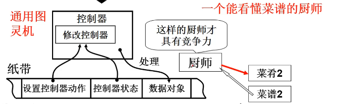</p>
<p>通用图灵机可以进行编程了，就如同给厨师不同的菜谱可以做出不同的菜。</p>
<h3 id="从通用图灵机到计算机"><a href="#从通用图灵机到计算机" class="headerlink" title="从通用图灵机到计算机"></a>从通用图灵机到计算机</h3><ul>
<li>伟大想法的工程实现<ul>
<li>冯诺依曼存储程序思想（1946年提出）</li>
<li>主要思想：将程序和数据放在计算机内部的存储器中，计算机在程序控制下一步一步进行处理</li>
<li>计算机由五大部件组成：输入设备、输出设备、存储器、运算器、控制器。</li>
</ul>
</li>
</ul>
<h3 id="打开电源，计算机执行的第一条指令是什么？"><a href="#打开电源，计算机执行的第一条指令是什么？" class="headerlink" title="打开电源，计算机执行的第一条指令是什么？"></a>打开电源，计算机执行的第一条指令是什么？</h3><ul>
<li><p>计算模型=&gt;我们要关注指针IP及其指向的内容</p>
<ul>
<li>计算机刚打开电源时，IP=？</li>
<li>由硬件设计者决定！</li>
</ul>
</li>
<li><p>看x86 PC</p>
<ol>
<li><p>x86刚开机时CPU处于实模式。</p>
<p>实模式和保护模式对应，实模式的寻址CS:IP(CS左移4位+IP)，和保护模式不同。</p>
</li>
<li><p>开机时，CS=0xFFFF；IP=0x0000</p>
</li>
<li><p>寻址0xFFFF0(ROM BIOS映射区)</p>
</li>
<li><p>检查RAM，键盘，显示器，软硬磁盘，主板……</p>
</li>
<li><p>将磁盘0磁道0扇区（MBR）读入0x7c00处（一个扇区524字节）</p>
</li>
<li><p>设置CS=0x07c0,IP=0x0000</p>
</li>
</ol>
</li>
</ul>
<h3 id="0x7c00处存放的代码"><a href="#0x7c00处存放的代码" class="headerlink" title="0x7c00处存放的代码"></a>0x7c00处存放的代码</h3><ul>
<li>就是从磁盘引导扇区读入的那512字节<ul>
<li>引导扇区就是启动设备的第一个扇区（开机时按住del健可进入启动设备设置界面，可以设置为光盘启动）</li>
<li>启动设备信息被设置在CMOS中…（CMOS：互补金属氧化物半导体。用来存储时钟和硬件配置信息）</li>
<li>因此，硬盘的第一个扇区上存放着开机后执行的第一段我们可以控制的程序</li>
<li>操作系统的故事从这里开始</li>
</ul>
</li>
</ul>
<h3 id="引导扇区代码：bootsect-s"><a href="#引导扇区代码：bootsect-s" class="headerlink" title="引导扇区代码：bootsect.s"></a>引导扇区代码：bootsect.s</h3><figure class="highlight plaintext"><table><tr><td class="gutter"><pre><span class="line">1</span><br><span class="line">2</span><br><span class="line">3</span><br><span class="line">4</span><br><span class="line">5</span><br><span class="line">6</span><br><span class="line">7</span><br><span class="line">8</span><br><span class="line">9</span><br><span class="line">10</span><br><span class="line">11</span><br><span class="line">12</span><br><span class="line">13</span><br><span class="line">14</span><br><span class="line">15</span><br><span class="line">16</span><br><span class="line">17</span><br><span class="line">18</span><br><span class="line">19</span><br><span class="line">20</span><br><span class="line">21</span><br><span class="line">22</span><br><span class="line">23</span><br><span class="line">24</span><br><span class="line">25</span><br><span class="line">26</span><br><span class="line">27</span><br><span class="line">28</span><br><span class="line">29</span><br><span class="line">30</span><br><span class="line">31</span><br><span class="line">32</span><br><span class="line">33</span><br><span class="line">34</span><br><span class="line">35</span><br><span class="line">36</span><br><span class="line">37</span><br><span class="line">38</span><br><span class="line">39</span><br><span class="line">40</span><br><span class="line">41</span><br><span class="line">42</span><br><span class="line">43</span><br><span class="line">44</span><br><span class="line">45</span><br><span class="line">46</span><br><span class="line">47</span><br><span class="line">48</span><br><span class="line">49</span><br><span class="line">50</span><br><span class="line">51</span><br><span class="line">52</span><br><span class="line">53</span><br><span class="line">54</span><br><span class="line">55</span><br><span class="line">56</span><br><span class="line">57</span><br><span class="line">58</span><br><span class="line">59</span><br><span class="line">60</span><br><span class="line">61</span><br><span class="line">62</span><br><span class="line">63</span><br><span class="line">64</span><br><span class="line">65</span><br></pre></td><td class="code"><pre><span class="line">.globl begtext,begdata,begbss,endtext,enddata,endbss</span><br><span class="line">.text	//文本段</span><br><span class="line">begtext:</span><br><span class="line">.data	//数据段</span><br><span class="line">begdata:</span><br><span class="line">.bss	//为初始化数据段</span><br><span class="line">begbss:</span><br><span class="line">entry start	//关键字entry告诉链接器“程序入口”</span><br><span class="line">start:</span><br><span class="line">	mov ax.#BOOTSEG</span><br><span class="line">	//0x07c0,启动代码所在位置放入ax</span><br><span class="line">	mov ds,ax</span><br><span class="line">	//将启动代码与ds寄存器关联</span><br><span class="line">	mov ax.#INITSEG</span><br><span class="line">	//启动代码要被复制到的目的地址</span><br><span class="line">	mov es,ax</span><br><span class="line">	//将目的地址与es寄存器关联</span><br><span class="line">	mov cx,#256</span><br><span class="line">	</span><br><span class="line">	sub si,si</span><br><span class="line">	sub di,di</span><br><span class="line">	//si清零,ds:si即0x07c00</span><br><span class="line">	//di清零,es:di即0x90000</span><br><span class="line">	rep</span><br><span class="line">	//循环移动cx（256）个字,512字节</span><br><span class="line">	//将0x07c0 : 0x0000处的256个字移到0x9000 : 0x0000处</span><br><span class="line">	movw</span><br><span class="line">	jmpi go,INITSEG	//CS=INITSEG	IP=go</span><br><span class="line">	//jmpi 段间跳转</span><br><span class="line">/*</span><br><span class="line">SETUPLEN = 4	nomber of setup-sectors</span><br><span class="line">BOOTSEG  = 0x07c0	original address of boot-sector</span><br><span class="line">INITSEG  = 0x9000	we move boot here - out of the way</span><br><span class="line">SETUPSEG = 0x9020	setup starts here</span><br><span class="line">SYSSEG   = 0x1000	system loaded at 0x10000 (65536).</span><br><span class="line">ENDSEG   = SYSSEG + SYSSIZE	where to stop loading</span><br><span class="line">*/</span><br><span class="line">//由于启动代码复制到了新位置，需要更改相应寄存器的值</span><br><span class="line">go:	mov ax,cs	</span><br><span class="line">	//cs=0x9000</span><br><span class="line">	mov ds,ax </span><br><span class="line">	mov	es,ax</span><br><span class="line">	mov ss,ax</span><br><span class="line">	//开始引入栈</span><br><span class="line">	mov sp,#0xff00</span><br><span class="line">	//为call做准备，栈空间为0x9ff00</span><br><span class="line">//开始加载setup块</span><br><span class="line">load_setup:	//载入setup模块</span><br><span class="line">	mov	dx,#0x0000</span><br><span class="line">	//设置驱动器和磁头(drive 0, head 0): 软盘 0 磁头 </span><br><span class="line">	mov cx,#0x0002</span><br><span class="line">	//设置扇区号和磁道(sector 2, track 0): 0 磁头、0 磁道、2 扇区</span><br><span class="line">	mov bx,#0x0200</span><br><span class="line">	//设置读入的内存地址：BOOTSEG+address = 512，偏移512字节</span><br><span class="line">	mov ax,#0x0200+SETUPLEN</span><br><span class="line">	//SETUPLEN是读入的扇区个数，Linux 0.11 设置的是 4</span><br><span class="line">	int 0x13	</span><br><span class="line">	//BIOS中断,将setup.s对应的程序加载至内存指定地址</span><br><span class="line">	jnc ok_load_setup</span><br><span class="line">	//cf标志寄存器为0就跳转至ok_load_setup块   </span><br><span class="line">	mov dx,#0x0000</span><br><span class="line">	mov ax,#0x0000</span><br><span class="line">	int 0x13</span><br><span class="line">	//复位,cf!=０则重新设置传入信息,进入中断 </span><br><span class="line">	j	load_setup	//重读</span><br></pre></td></tr></table></figure>

<p></p>
<ul>
<li>0x13是BIOS读磁盘扇区的中断：<ul>
<li>ah=0x02    读磁盘</li>
<li>al=扇区数量（SETUPLEN=4）</li>
<li>ch=柱面号</li>
<li>cl=开始扇区（0x02，第二个扇区，因为第一个扇区boot扇区）</li>
<li>dh=磁头号</li>
<li>dl=驱动器号</li>
<li>es（0x9000）:bx（0x0200）=内存地址(0x90200)</li>
</ul>
</li>
</ul>
<figure class="highlight plaintext"><table><tr><td class="gutter"><pre><span class="line">1</span><br><span class="line">2</span><br><span class="line">3</span><br><span class="line">4</span><br><span class="line">5</span><br><span class="line">6</span><br><span class="line">7</span><br><span class="line">8</span><br><span class="line">9</span><br><span class="line">10</span><br><span class="line">11</span><br><span class="line">12</span><br><span class="line">13</span><br><span class="line">14</span><br><span class="line">15</span><br><span class="line">16</span><br><span class="line">17</span><br><span class="line">18</span><br><span class="line">19</span><br><span class="line">20</span><br><span class="line">21</span><br><span class="line">22</span><br><span class="line">23</span><br><span class="line">24</span><br><span class="line">25</span><br><span class="line">26</span><br><span class="line">27</span><br><span class="line">28</span><br><span class="line">29</span><br><span class="line">30</span><br><span class="line">31</span><br><span class="line">32</span><br><span class="line">33</span><br><span class="line">34</span><br><span class="line">35</span><br><span class="line">36</span><br><span class="line">37</span><br><span class="line">38</span><br><span class="line">39</span><br><span class="line">40</span><br><span class="line">41</span><br><span class="line">42</span><br><span class="line">43</span><br><span class="line">44</span><br><span class="line">45</span><br><span class="line">46</span><br></pre></td><td class="code"><pre><span class="line">ok_load_setup:	//载入setup模块</span><br><span class="line">	mov dl,#0x00</span><br><span class="line">	mov ax,#0x0800</span><br><span class="line">	//ah=0x08获得磁盘参数</span><br><span class="line">	int 0x13</span><br><span class="line">	mov ch，#0x00</span><br><span class="line">	mov sectors，cx</span><br><span class="line">	//保存每磁道扇区数</span><br><span class="line">	mov ah，#0x03</span><br><span class="line">	//读光标位置</span><br><span class="line">	xor bh,bh</span><br><span class="line">	int 0x10</span><br><span class="line">	mov cx,#24</span><br><span class="line">	//要显示24个字符</span><br><span class="line">	mov bx,#0x0007</span><br><span class="line">	//7是显示属性</span><br><span class="line">	</span><br><span class="line">	mov bp，#msg1</span><br><span class="line">	mov ax，#1301</span><br><span class="line">	int 0x10	//显示字符</span><br><span class="line">	//将msg1的字符显示到光标位置</span><br><span class="line">	/*</span><br><span class="line">	bootsect.s中的数据，在文件末尾</span><br><span class="line">	.sectors: .word 0	//磁道扇区数</span><br><span class="line">	msg1:.byte 13,10</span><br><span class="line">		 .ascii &quot;Loading system...&quot;</span><br><span class="line">		 .byte 13,10,13,10</span><br><span class="line">	*/</span><br><span class="line">	mov    ax,#SYSSEG    </span><br><span class="line">	//内核代码被加载到的地址</span><br><span class="line">	mov es,ax</span><br><span class="line">	call read_it	//读入system模块</span><br><span class="line">	jumpi 0，SETUPSEG</span><br><span class="line">	//转入0x9020 : 0x0000执行setup.s</span><br><span class="line">read_it:</span><br><span class="line">	mov ax,es</span><br><span class="line">	cmp ax,#ENDSEG</span><br><span class="line">	//system模块很大，要跨越磁道！</span><br><span class="line">	//ENDSEG=SYSSEG+SYSSIZE</span><br><span class="line">	//SYSSIZE=0x8000(该变量可根据Image大小设定)</span><br><span class="line">	jb ok1_read</span><br><span class="line">	ret</span><br><span class="line">ok1_read:</span><br><span class="line">	mov ax,sectors</span><br><span class="line">	sub ax,sread	//sread是当前磁道已读扇区数，ax未读扇区数</span><br><span class="line">	call read_track	//读磁道...</span><br></pre></td></tr></table></figure>

<p>引导扇区的末尾//BIOS用以识别引导扇区</p>
<figure class="highlight plaintext"><table><tr><td class="gutter"><pre><span class="line">1</span><br><span class="line">2</span><br></pre></td><td class="code"><pre><span class="line">.org 510</span><br><span class="line">	.word 0xAA55 //扇区的最后两个字节</span><br></pre></td></tr></table></figure>

<p>可以转入setup执行了，jmpi 0，SETUPSEG</p>
<h2 id="操作系统启动"><a href="#操作系统启动" class="headerlink" title="操作系统启动"></a>操作系统启动</h2><h3 id="setup模块，即setup-s"><a href="#setup模块，即setup-s" class="headerlink" title="setup模块，即setup.s"></a>setup模块，即setup.s</h3><figure class="highlight plaintext"><table><tr><td class="gutter"><pre><span class="line">1</span><br><span class="line">2</span><br><span class="line">3</span><br><span class="line">4</span><br><span class="line">5</span><br><span class="line">6</span><br><span class="line">7</span><br><span class="line">8</span><br><span class="line">9</span><br><span class="line">10</span><br><span class="line">11</span><br><span class="line">12</span><br><span class="line">13</span><br><span class="line">14</span><br><span class="line">15</span><br><span class="line">16</span><br><span class="line">17</span><br><span class="line">18</span><br><span class="line">19</span><br><span class="line">20</span><br><span class="line">21</span><br><span class="line">22</span><br><span class="line">23</span><br><span class="line">24</span><br><span class="line">25</span><br><span class="line">26</span><br><span class="line">27</span><br><span class="line">28</span><br><span class="line">29</span><br><span class="line">30</span><br></pre></td><td class="code"><pre><span class="line">start:</span><br><span class="line">	mov ax,#INITSEG</span><br><span class="line">	mov ds,ax</span><br><span class="line">	mov ah,#0x03</span><br><span class="line">	//获取光标位置</span><br><span class="line">	xor bh,bh</span><br><span class="line">	//bh=页号=0（输入）</span><br><span class="line">	int 0x10</span><br><span class="line">	//输出： DH=行号，DL=列号</span><br><span class="line">	mov [0],dx</span><br><span class="line">	mov ah,#0x88</span><br><span class="line">	int 0x15</span><br><span class="line">	//获取内存大小</span><br><span class="line">	mov [2],ax</span><br><span class="line">	cli	//不允许中断</span><br><span class="line">	mov ah,#0x0000</span><br><span class="line">	//保存光标的行号和列号到 0x90000，共占2字节</span><br><span class="line">	cld</span><br><span class="line">do_move:</span><br><span class="line">	mov es,ax</span><br><span class="line">	add ax,#0x1000</span><br><span class="line">	cmp ax,#0x9000</span><br><span class="line">	jz	end_move</span><br><span class="line">	mov	ds,ax</span><br><span class="line">	sub	di,di</span><br><span class="line">	sub si,si</span><br><span class="line">	mov	cx,#0x8000</span><br><span class="line">	rep</span><br><span class="line">	movsw</span><br><span class="line">	jmp	do_move</span><br></pre></td></tr></table></figure>

<p></p>
<figure class="highlight c"><table><tr><td class="gutter"><pre><span class="line">1</span><br><span class="line">2</span><br><span class="line">3</span><br><span class="line">4</span><br><span class="line">5</span><br><span class="line">6</span><br><span class="line">7</span><br><span class="line">8</span><br><span class="line">9</span><br><span class="line">10</span><br><span class="line">11</span><br><span class="line">12</span><br><span class="line">13</span><br><span class="line">14</span><br><span class="line">15</span><br><span class="line">16</span><br><span class="line">17</span><br></pre></td><td class="code"><pre><span class="line">do_move的C翻译:</span><br><span class="line"></span><br><span class="line">ax = <span class="number">0</span>;</span><br><span class="line">cld;</span><br><span class="line"><span class="keyword">while</span>(<span class="number">1</span>)&#123;</span><br><span class="line">    es = ax;</span><br><span class="line">    ax += <span class="number">0x1000</span>;</span><br><span class="line">    <span class="keyword">if</span>(ax == <span class="number">0x9000</span>)</span><br><span class="line">        <span class="keyword">break</span>;  <span class="comment">//结束移动</span></span><br><span class="line">    ds = ax;</span><br><span class="line">    di = si = <span class="number">0</span>;</span><br><span class="line">    <span class="keyword">for</span>(<span class="keyword">int</span> i=<span class="number">0</span>; i&lt;<span class="number">0x8000</span>; ++i)&#123;</span><br><span class="line">       <span class="built_in">memcpy</span>(es:di, ds:si, <span class="number">2</span>);</span><br><span class="line">       di += <span class="number">2</span>;</span><br><span class="line">       si += <span class="number">2</span>;</span><br><span class="line">    &#125;</span><br><span class="line">&#125;</span><br></pre></td></tr></table></figure>

<h3 id="保护模式下的地址翻译和中断处理"><a href="#保护模式下的地址翻译和中断处理" class="headerlink" title="保护模式下的地址翻译和中断处理"></a>保护模式下的地址翻译和中断处理</h3><ul>
<li><p>保护模式下的地址翻译</p>
<p>即gdt（全局描述符表）的作用：</p>
<p>t是table，所以实模式下:cs左移4+ip。保护模式下：根据cs查表+ip。cs这里被称为选择子。</p>
<p></p>
</li>
<li><p>保护模式下中断函数入口</p>
<p>即idt（中断描述符表）的作用：</p>
<p>t是table，仿照gdt，通过int n的n进行查表</p>
</li>
</ul>
<p>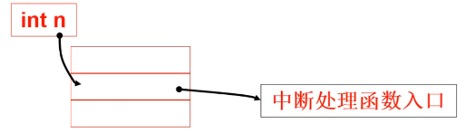</p>
<h3 id="将setup移到0地址处"><a href="#将setup移到0地址处" class="headerlink" title="将setup移到0地址处"></a>将setup移到0地址处</h3><ul>
<li>但0地址处是有重要内容的<ul>
<li>此处存储的是中断向量表</li>
</ul>
</li>
<li>以后不调用int指令了吗？</li>
<li>因为操作系统要让硬件进入保护模式了</li>
<li>保护模式下int n和cs：ip的解释不再和实模式一样</li>
</ul>
<p>我们需要初始化这些表</p>
<figure class="highlight plaintext"><table><tr><td class="gutter"><pre><span class="line">1</span><br><span class="line">2</span><br><span class="line">3</span><br><span class="line">4</span><br><span class="line">5</span><br><span class="line">6</span><br><span class="line">7</span><br><span class="line">8</span><br><span class="line">9</span><br><span class="line">10</span><br><span class="line">11</span><br><span class="line">12</span><br><span class="line">13</span><br><span class="line">14</span><br><span class="line">15</span><br><span class="line">16</span><br></pre></td><td class="code"><pre><span class="line">end_move:</span><br><span class="line">	mov ax,#SETUPSEG</span><br><span class="line">	mov ds,ax</span><br><span class="line">	lidt idt_48</span><br><span class="line">	lgdt gdt_48</span><br><span class="line">	//设置保护模式下的中断和寻址</span><br><span class="line">idt_48:</span><br><span class="line">	.word 0</span><br><span class="line">	.word 0,0	//保护模式中断函数表</span><br><span class="line">gdt_48:</span><br><span class="line">	.word 0x800</span><br><span class="line">	.word 512+gdt,0x9</span><br><span class="line">gdt:</span><br><span class="line">	.word 0,0,0,0</span><br><span class="line">	.word 0x07FF,0x0000,9x9A00,0x00C0</span><br><span class="line">	.word 0x07FF,0x0000,9x9200,0x00C0</span><br></pre></td></tr></table></figure>

<h3 id="进入保护模式"><a href="#进入保护模式" class="headerlink" title="进入保护模式"></a>进入保护模式</h3><figure class="highlight plaintext"><table><tr><td class="gutter"><pre><span class="line">1</span><br><span class="line">2</span><br><span class="line">3</span><br><span class="line">4</span><br><span class="line">5</span><br><span class="line">6</span><br><span class="line">7</span><br><span class="line">8</span><br><span class="line">9</span><br><span class="line">10</span><br><span class="line">11</span><br><span class="line">12</span><br></pre></td><td class="code"><pre><span class="line">	call empty_8042</span><br><span class="line">//8042是键盘控制器，</span><br><span class="line">	mov	al,#0xD1</span><br><span class="line">	out #0x64,al</span><br><span class="line">	call empty_8042</span><br><span class="line">	mov al,#0xDF</span><br><span class="line">	out #0x60,al</span><br><span class="line">	call empty_8042</span><br><span class="line">	mov ax,#0x0001</span><br><span class="line">	mov cr0,ax</span><br><span class="line">	//cr0寄存器中PE=1启动保护模式，PG=1启动分页</span><br><span class="line">	jmpi 0,8</span><br></pre></td></tr></table></figure>

<p></p>
<p>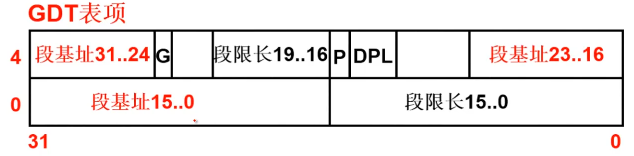</p>
<p>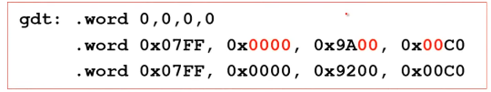</p>
<h3 id="跳到system模块执行"><a href="#跳到system模块执行" class="headerlink" title="跳到system模块执行"></a>跳到system模块执行</h3><p>system模块（目标代码）中的第一部分代码：head.s</p>
<p>system由许多文件编译而成，第一个就是head.s</p>
<p></p>
<h3 id="head-s-一段在保护模式下运行的代码"><a href="#head-s-一段在保护模式下运行的代码" class="headerlink" title="head.s//一段在保护模式下运行的代码"></a>head.s//一段在保护模式下运行的代码</h3><ul>
<li>setup是进入保护模式，head是进入之后的初始化</li>
</ul>
<figure class="highlight plaintext"><table><tr><td class="gutter"><pre><span class="line">1</span><br><span class="line">2</span><br><span class="line">3</span><br><span class="line">4</span><br><span class="line">5</span><br><span class="line">6</span><br><span class="line">7</span><br><span class="line">8</span><br><span class="line">9</span><br><span class="line">10</span><br><span class="line">11</span><br><span class="line">12</span><br><span class="line">13</span><br><span class="line">14</span><br><span class="line">15</span><br><span class="line">16</span><br><span class="line">17</span><br><span class="line">18</span><br><span class="line">19</span><br><span class="line">20</span><br><span class="line">21</span><br><span class="line">22</span><br><span class="line">23</span><br><span class="line">24</span><br><span class="line">25</span><br><span class="line">26</span><br><span class="line">27</span><br></pre></td><td class="code"><pre><span class="line">stratup_32:</span><br><span class="line">	movl $0x10,%eax</span><br><span class="line">	mov %ax,%ds</span><br><span class="line">	mov %ax,%es</span><br><span class="line">	</span><br><span class="line">	mov	%as,%fs</span><br><span class="line">	mov	%as,%gs</span><br><span class="line">	//指向gdt的0x10项(数据段)</span><br><span class="line">	</span><br><span class="line">	lss _start,%esp//设置栈(系统栈)</span><br><span class="line">	call setup_idt</span><br><span class="line">	call setup_gdt</span><br><span class="line">	//设置q和GDT</span><br><span class="line">	xorl %eax,%eax</span><br><span class="line">l:</span><br><span class="line">	incl %eax</span><br><span class="line">	movl %eax,0x000000</span><br><span class="line">	cmpl %eax,0x100000</span><br><span class="line">	je 1b	//0地址和1M地址处相同（A20没开启），就死循环</span><br><span class="line">	//检测A20开启否</span><br><span class="line">	jmp	after_page_tables//页表</span><br><span class="line">setup_idt:</span><br><span class="line">	lea ignore_int,%edx</span><br><span class="line">	movl $0x00080000,%eax</span><br><span class="line">	movw %dx,%ax</span><br><span class="line">	lea _idt,%edi</span><br><span class="line">	movl %eax,(%edi)</span><br></pre></td></tr></table></figure>

<h3 id="关于汇编…head-s的汇编和之前不一样？"><a href="#关于汇编…head-s的汇编和之前不一样？" class="headerlink" title="关于汇编…head.s的汇编和之前不一样？"></a>关于汇编…head.s的汇编和之前不一样？</h3><ol>
<li><p>as86汇编：能产生16位代码的Intel 8086汇编</p>
<figure class="highlight plaintext"><table><tr><td class="gutter"><pre><span class="line">1</span><br></pre></td><td class="code"><pre><span class="line">mov ax,cs	//cs-&gt;ax，目标操作数在前</span><br></pre></td></tr></table></figure></li>
<li><p>GNU as汇编：产生32位代码，使用AT&amp;T语法</p>
<figure class="highlight plaintext"><table><tr><td class="gutter"><pre><span class="line">1</span><br><span class="line">2</span><br></pre></td><td class="code"><pre><span class="line">movl var,%eax	//（var）—&gt;%eax</span><br><span class="line">movb -4(%ebp),%al	//取出一字节</span><br></pre></td></tr></table></figure></li>
<li><p>内敛汇编，gcc编译x.c会产生中间结果as汇编文件x.s</p>
</li>
</ol>
<p></p>
<p></p>
<h3 id="after-page-tables-设置页表之后"><a href="#after-page-tables-设置页表之后" class="headerlink" title="after_page_tables    //设置页表之后"></a>after_page_tables    //设置页表之后</h3><ul>
<li><p>setup是进入保护模式，head是进入之后的初始化</p>
<figure class="highlight plaintext"><table><tr><td class="gutter"><pre><span class="line">1</span><br><span class="line">2</span><br><span class="line">3</span><br><span class="line">4</span><br><span class="line">5</span><br><span class="line">6</span><br><span class="line">7</span><br><span class="line">8</span><br><span class="line">9</span><br><span class="line">10</span><br><span class="line">11</span><br></pre></td><td class="code"><pre><span class="line">after_page_tables:</span><br><span class="line">	pushl $0</span><br><span class="line">	pushl $0</span><br><span class="line">	pushl $0</span><br><span class="line">	pushl $L6</span><br><span class="line">	//压栈</span><br><span class="line">	pushl $_main//将_main压入栈中</span><br><span class="line">	jmp set_paging</span><br><span class="line">L6:</span><br><span class="line">	jmp	L6//main返回时死循环，死机。</span><br><span class="line">setup_paging: 设置页表 ret</span><br></pre></td></tr></table></figure>

<p>setup_paging执行ret后，会执行main.c。</p>
<p>从汇编跳到执行C函数，和函数跳转一样。</p>
</li>
</ul>
<p></p>
<p>三个参数分别为envp,argv,argc，此处都是0。</p>
<p>此处的main只保留了传统的形式和命名。</p>
<p>main的工作就是xx_init:内存、中断、设备、时钟、CPU等内容的初始化。</p>
<figure class="highlight c"><table><tr><td class="gutter"><pre><span class="line">1</span><br><span class="line">2</span><br><span class="line">3</span><br><span class="line">4</span><br><span class="line">5</span><br><span class="line">6</span><br><span class="line">7</span><br><span class="line">8</span><br><span class="line">9</span><br><span class="line">10</span><br><span class="line">11</span><br><span class="line">12</span><br><span class="line">13</span><br><span class="line">14</span><br><span class="line">15</span><br><span class="line">16</span><br></pre></td><td class="code"><pre><span class="line"><span class="function"><span class="keyword">void</span> <span class="title">main</span><span class="params">(<span class="keyword">void</span>)</span></span></span><br><span class="line"><span class="function"></span>&#123;</span><br><span class="line">    mem_init();</span><br><span class="line">    trap_init();</span><br><span class="line">    blk_dev_init();</span><br><span class="line">    chr_dev_init();</span><br><span class="line">    tty_init();</span><br><span class="line">    time_init();</span><br><span class="line">    sched_init();</span><br><span class="line">    buffer_init();</span><br><span class="line">    hd_init();</span><br><span class="line">    floppy_init();</span><br><span class="line">    sti();</span><br><span class="line">    move_to_user_mode();</span><br><span class="line">    <span class="keyword">if</span>(!fork())&#123;init();&#125;</span><br><span class="line">&#125;</span><br></pre></td></tr></table></figure>

<h3 id="看一看mem-init…可以在视图菜单中关闭"><a href="#看一看mem-init…可以在视图菜单中关闭" class="headerlink" title="看一看mem_init…可以在视图菜单中关闭"></a>看一看mem_init…可以在<code>视图</code>菜单中关闭</h3><p>执行内存的初始化。</p>
<p></p>
<figure class="highlight c"><table><tr><td class="gutter"><pre><span class="line">1</span><br><span class="line">2</span><br><span class="line">3</span><br><span class="line">4</span><br><span class="line">5</span><br><span class="line">6</span><br><span class="line">7</span><br><span class="line">8</span><br><span class="line">9</span><br><span class="line">10</span><br><span class="line">11</span><br></pre></td><td class="code"><pre><span class="line"><span class="function"><span class="keyword">void</span> <span class="title">mem_init</span><span class="params">(<span class="keyword">long</span> start_mem,<span class="keyword">long</span> end_mem)</span></span></span><br><span class="line"><span class="function"></span>&#123;</span><br><span class="line">    <span class="keyword">int</span> i;</span><br><span class="line">    <span class="keyword">for</span>(i=<span class="number">0</span>;i&lt;PAGING_PAGS;i++)<span class="comment">//操作系统是使用着的</span></span><br><span class="line">        mem_map[i]=USED;</span><br><span class="line">    i=MAP_NR(start_mem);</span><br><span class="line">    end_mem-=start_mem;</span><br><span class="line">    end_mem&gt;&gt;=<span class="number">12</span>;	<span class="comment">//4k</span></span><br><span class="line">    <span class="keyword">while</span>(end_mem --&gt;<span class="number">0</span>)</span><br><span class="line">        mem_map[i++]=<span class="number">0</span>;<span class="comment">//每4k大小的区域放在一起置为0</span></span><br><span class="line">&#125;</span><br></pre></td></tr></table></figure>

<h2 id="操作系统接口"><a href="#操作系统接口" class="headerlink" title="操作系统接口"></a>操作系统接口</h2><h3 id="接口（Interface）"><a href="#接口（Interface）" class="headerlink" title="接口（Interface）"></a>接口（Interface）</h3><ul>
<li>连接两个东西、信号转换、屏蔽细节</li>
</ul>
<h4 id="什么是操作系统接口？"><a href="#什么是操作系统接口？" class="headerlink" title="什么是操作系统接口？"></a>什么是操作系统接口？</h4><p>连接上层用户和操作系统软件。</p>
<h5 id="命令行？"><a href="#命令行？" class="headerlink" title="命令行？"></a>命令行？</h5><p>命令：一段程序，shell也是一段程序。</p>
<p>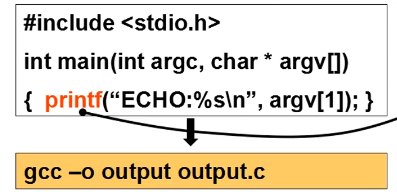</p>
<p></p>
<p>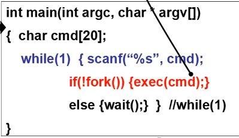</p>
<h5 id="图形按钮？"><a href="#图形按钮？" class="headerlink" title="图形按钮？"></a>图形按钮？</h5><ul>
<li>鼠标点击、键盘按下后</li>
</ul>
<p>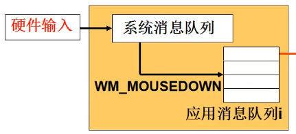</p>
<p></p>
<p>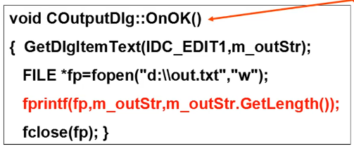</p>
<h5 id="操作系统接口-1"><a href="#操作系统接口-1" class="headerlink" title="操作系统接口"></a>操作系统接口</h5><p>通过C语言程序，连接操作系统和应用软件。</p>
<p>接口表现为函数调用，又由系统提供，所以称为系统调用。</p>
<h3 id="系统调用"><a href="#系统调用" class="headerlink" title="系统调用"></a>系统调用</h3><ul>
<li>POSIX：Portable Operating System Interface of Unix（IEEE制定的一个标准族）</li>
</ul>
<p>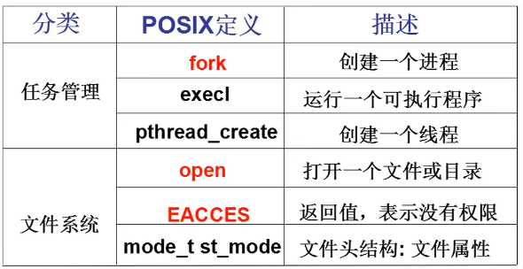</p>
<h2 id="系统调用的实现"><a href="#系统调用的实现" class="headerlink" title="系统调用的实现"></a>系统调用的实现</h2><figure class="highlight c"><table><tr><td class="gutter"><pre><span class="line">1</span><br><span class="line">2</span><br><span class="line">3</span><br><span class="line">4</span><br><span class="line">5</span><br><span class="line">6</span><br></pre></td><td class="code"><pre><span class="line">main()&#123;whoami();&#125;</span><br><span class="line">whoami()</span><br><span class="line">&#123;</span><br><span class="line">    <span class="built_in">printf</span>(<span class="number">100</span>,<span class="number">8</span>);</span><br><span class="line">&#125;</span><br><span class="line"><span class="number">100</span>:<span class="string">&quot;lizhijun&quot;</span></span><br></pre></td></tr></table></figure>

<p>应用程序为什么不能直接jmp到操作系统中执行函数？</p>
<p>不允许，会有安全问题。</p>
<h3 id="内核（用户）态，内核（用户）段"><a href="#内核（用户）态，内核（用户）段" class="headerlink" title="内核（用户）态，内核（用户）段"></a>内核（用户）态，内核（用户）段</h3><ul>
<li><p>将内核程序和用户程序隔离</p>
<ul>
<li><p>区分内核态和用户态：通过一种处理器的硬件设计。</p>
</li>
<li><p>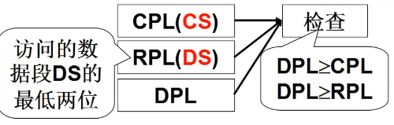</p>
</li>
<li><p>DPL用于描述目标内存段的特权级别（GDT中），CPL（当前的特权级，取决于执行的指令）</p>
</li>
</ul>
</li>
</ul>
<h3 id="硬件提供了“主动进入内核的唯一方法”"><a href="#硬件提供了“主动进入内核的唯一方法”" class="headerlink" title="硬件提供了“主动进入内核的唯一方法”"></a>硬件提供了“主动进入内核的唯一方法”</h3><ul>
<li>int指令将使CS中的CPL改为0，“进入内核”</li>
<li>这是用户程序发起调用内核代码的唯一方式</li>
<li> 系统调用的核心：</li>
</ul>
<ol>
<li>用户程序中包含一段包含int指令的代码</li>
<li>操作系统写中断处理，获取想调程序的编号</li>
<li>操作系统根据编号执行相应代码</li>
</ol>
<h3 id="实现"><a href="#实现" class="headerlink" title="实现"></a>实现</h3><p></p>
<ul>
<li><p>最终展开成包含int指令的代码… </p>
<p></p>
</li>
</ul>
<h3 id="Write实现"><a href="#Write实现" class="headerlink" title="Write实现"></a>Write实现</h3><p></p>
<p>先int 0x80，调用0x80号中断，再把_NR_write(4)赋给eax，eax又赋给了__res作为返回值。最后把a赋给ebx，把b赋给ecx,把c赋给edx。</p>
<p>NR_write是系统调用号，放在eax中。</p>
<p></p>
<h3 id="int-0x80中断的处理"><a href="#int-0x80中断的处理" class="headerlink" title="int 0x80中断的处理"></a>int 0x80中断的处理</h3><p>通过IDT表来找到中断处理函数。</p>
<ul>
<li>显然，set_system_gate用来设置0x80的中断处理</li>
</ul>
<figure class="highlight c"><table><tr><td class="gutter"><pre><span class="line">1</span><br><span class="line">2</span><br><span class="line">3</span><br><span class="line">4</span><br><span class="line">5</span><br><span class="line">6</span><br><span class="line">7</span><br><span class="line">8</span><br><span class="line">9</span><br><span class="line">10</span><br><span class="line">11</span><br><span class="line">12</span><br><span class="line">13</span><br></pre></td><td class="code"><pre><span class="line"><span class="function"><span class="keyword">void</span> <span class="title">sched_init</span><span class="params">(<span class="keyword">void</span>)</span></span></span><br><span class="line"><span class="function"></span>&#123;	set_system_gate(<span class="number">0x80</span>,&amp;system_call)&#125;<span class="comment">//中断处理门</span></span><br><span class="line"><span class="comment">//遇到0x80中断，就跳到system_call的中断处理函数</span></span><br><span class="line"><span class="meta">#<span class="meta-keyword">define</span> set_system_gate(n,addr)	<span class="comment">//第n号中断对应处理函数入口点偏移地址addr</span></span></span><br><span class="line">_set_gate(&amp;idt[n],<span class="number">15</span>,<span class="number">3</span>,addr);<span class="comment">//idt是中断向量表基址</span></span><br><span class="line"><span class="meta">#<span class="meta-keyword">define</span> _set_gate(gate_addr, type, dpl, addr)</span></span><br><span class="line">_asm_(</span><br><span class="line">    <span class="string">&quot;movw %%dx,%%ax\n\t&quot;</span> <span class="string">&quot;movw %0,%%dx\n\t&quot;</span></span><br><span class="line">    <span class="string">&quot;movl %%eax, %1\n\t&quot;</span> <span class="string">&quot;movl %%edx, %2&quot;</span>:</span><br><span class="line">     :<span class="string">&quot;i&quot;</span>((<span class="keyword">short</span>)(<span class="number">0x8000</span>+(dpl&lt;&lt;<span class="number">13</span>)+type&lt;&lt;<span class="number">8</span>))</span><br><span class="line">	),<span class="string">&quot;o&quot;</span>(*((<span class="keyword">char</span>*)(gate_addr))),</span><br><span class="line">	<span class="string">&quot;o&quot;</span>(*(<span class="number">4</span>+(<span class="keyword">char</span>*)(gate_addr))),</span><br><span class="line">	<span class="string">&quot;d&quot;</span>((<span class="keyword">char</span>*)(addr),<span class="string">&quot;a&quot;</span>(<span class="number">0x00080000</span>))</span><br></pre></td></tr></table></figure>

<p></p>
<p>段选择符0x8000,处理函数入口点偏移&amp;system_call。</p>
<p>cs=8，ip=&amp;system_call</p>
<p>cpl是cs最后两位，cpl=00</p>
<h3 id="中断处理程序：system"><a href="#中断处理程序：system" class="headerlink" title="中断处理程序：system"></a>中断处理程序：system</h3><figure class="highlight plaintext"><table><tr><td class="gutter"><pre><span class="line">1</span><br><span class="line">2</span><br><span class="line">3</span><br><span class="line">4</span><br><span class="line">5</span><br><span class="line">6</span><br><span class="line">7</span><br><span class="line">8</span><br><span class="line">9</span><br><span class="line">10</span><br><span class="line">11</span><br><span class="line">12</span><br><span class="line">13</span><br><span class="line">14</span><br><span class="line">15</span><br><span class="line">16</span><br><span class="line">17</span><br><span class="line">18</span><br><span class="line">19</span><br><span class="line">20</span><br><span class="line">21</span><br><span class="line">22</span><br><span class="line">23</span><br><span class="line">24</span><br><span class="line">25</span><br><span class="line">26</span><br><span class="line">27</span><br><span class="line">28</span><br><span class="line">29</span><br><span class="line">30</span><br></pre></td><td class="code"><pre><span class="line">nr_system_call=72</span><br><span class="line">.globl _system_call</span><br><span class="line">_system_call:</span><br><span class="line">	cmpl $nr_system_call-1,%eax	</span><br><span class="line">	//eax存放的是系统调用号</span><br><span class="line">	//eax=nr_write,系统调用号</span><br><span class="line">	ja bad_sys_call</span><br><span class="line">	push %ds</span><br><span class="line">	push %es</span><br><span class="line">	push %fs</span><br><span class="line">	</span><br><span class="line">	pushl %edx</span><br><span class="line">	pushl %ecx</span><br><span class="line">	pushl %ebx</span><br><span class="line">	//调用的参数</span><br><span class="line">	movl $0x10,%edx</span><br><span class="line">	mov %dx,%ds</span><br><span class="line">	mov %dx,%es</span><br><span class="line">	//内核数据</span><br><span class="line">	movl $0x17,%edx</span><br><span class="line">	mov %dx,fs</span><br><span class="line">	//fs可以找到用户数据</span><br><span class="line">	call _sys_call_table(,%eax,4)</span><br><span class="line">	//_sys_call_table+4*eax就是相应系统调用处理函数入口</span><br><span class="line">	//这里乘4是因为这个表里每一项都是一个函数地址4个字节</span><br><span class="line">	pushl %eax</span><br><span class="line">	//返回值压栈，留着ret_from_sys_call时用</span><br><span class="line">	...</span><br><span class="line">ret_from_sys_call:</span><br><span class="line">	popl %eax,其他pop,iret</span><br></pre></td></tr></table></figure>

<h3 id="sys-call-table"><a href="#sys-call-table" class="headerlink" title="_sys_call_table"></a>_sys_call_table</h3><figure class="highlight c"><table><tr><td class="gutter"><pre><span class="line">1</span><br><span class="line">2</span><br><span class="line">3</span><br><span class="line">4</span><br><span class="line">5</span><br></pre></td><td class="code"><pre><span class="line">fn_ptr_call_table[]=</span><br><span class="line">&#123;</span><br><span class="line">    sys_setup,sys_exit,sys_fork,sys_read,sys_write,</span><br><span class="line">    ...</span><br><span class="line">&#125;</span><br></pre></td></tr></table></figure>

<p>call _sys_call_table(,%eax,4)依据上表就是call sys_write</p>
<p>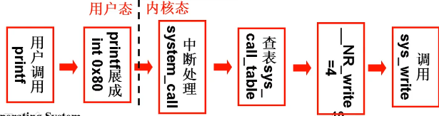</p>
<h3 id="总结"><a href="#总结" class="headerlink" title="总结"></a>总结</h3><p>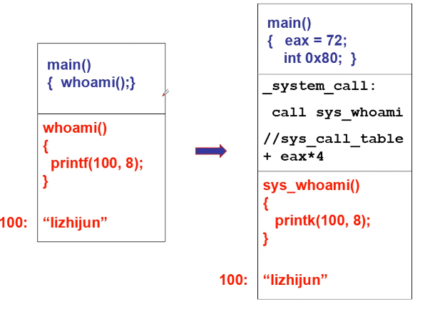</p>
<h2 id="操作系统历史"><a href="#操作系统历史" class="headerlink" title="操作系统历史"></a>操作系统历史</h2><h3 id="操作系统的开端"><a href="#操作系统的开端" class="headerlink" title="操作系统的开端"></a>操作系统的开端</h3><ul>
<li><p>（1955-1965）计算机非常昂贵，上古神机IBM7094,造价250万美元以上</p>
<ul>
<li>计算机使用原则：只专注于计算</li>
<li>批处理操作系统（Batch syste）</li>
<li>典型代表：<strong>IBSYS监控系统</strong></li>
</ul>
<p></p>
</li>
<li><p>计算机开始进入多个行业：科学计算（IBM 7094）,银行（IBM1401）</p>
<ul>
<li>需要一台计算机干多个事情</li>
<li>多道程序：在计算机内存中同时存放几道相互独立的程序，使它们在管理程序控制下，相互穿插运行，两个或两个以上程序在计算机系统中同处于开始到结束之间的状态, 这些程序共享计算机系统资源。</li>
<li>作业之间的切换和调度成为核心：因为既有IO认为，又有计算任务，需要让CPU忙碌，例如：读写磁盘时不让CPU闲置，执行下一任务，等读写结束，回到上一任务。<strong>多进程结构和进程管理萌芽。</strong></li>
<li>典型代表：<strong>IBM OS/360</strong>（360待变全方位服务），开发周期5000个人年</li>
</ul>
</li>
<li><p>计算机进入多个行业，使用人数增加</p>
<ul>
<li>如果每个人启动一个作业，作业之间快速切换</li>
<li>分时系统：分时操作系统将系统<a target="_blank" rel="noopener" href="https://baike.baidu.com/item/%E5%A4%84%E7%90%86%E6%9C%BA/128842">处理机</a>时间与内存空间按一定的时间间隔，轮流地切换给各终端用户的程序使用。由于时间间隔很短，每个用户的感觉就像他独占计算机一样。</li>
<li>代表：MIT MULTICS</li>
<li>核心仍然是任务切换，但是资源复用的思想对操作系统影响很大，虚拟内存就是一种复用。</li>
</ul>
</li>
<li><p>小型计算机出现，PDP-1每台售价120000美元</p>
<ul>
<li>越来越多的人可以使用计算机</li>
<li>1969年：贝尔实验室的Ken Thompson、Dennis Ritchi等在一台没人使用的PDP-7上开发了一个简化的MULTICS，就是后来的UNIX。</li>
</ul>
</li>
<li><p>1981，IBM推出IBM PC。个人计算机开始普及</p>
<ul>
<li>很多人可以用计算机并接触UNIX</li>
<li>1987年Andrew Tanenbaum发布了MINIX用于教学</li>
<li>Linus Torvalds在386sx兼容微机上学习minix，做出了小Linux于1991年发布</li>
<li>1994年，Linux1.0发布并采用GPL协议，1998年以后互联网世界开展了一场Linux产业化运动</li>
</ul>
</li>
</ul>
<h4 id="核心思想、技术："><a href="#核心思想、技术：" class="headerlink" title="核心思想、技术："></a>核心思想、技术：</h4><ol>
<li>用户通过执行程序来使用计算机（与冯诺依曼的思想吻合）</li>
<li>作为管理者，操作系统要让多个程序合理推进，就是<strong>进程管理</strong></li>
<li>多进程（用户）推进时需要内存复用</li>
<li>等等…</li>
</ol>
<p>多进程结构是操作系统基本图谱。</p>
<h3 id="PC与DOS"><a href="#PC与DOS" class="headerlink" title="PC与DOS"></a>PC与DOS</h3><ul>
<li>PC机的诞生一定会导致百花齐放。IBM推出PC，自然要给机器配一个操作系统<ul>
<li>1975年Digital Research为Altair 8800开发了操作系统CP/M</li>
<li>CP/M：写命令给用户用，执行命令对应的程序，单任务执行</li>
<li>1980出现了8086 16位芯片，在CP/M基础上开发了QDOS</li>
</ul>
</li>
<li>Bill Gates进入历史舞台<ul>
<li>1975年与Paul Allen为Altair 8800开发了BASIC解释器，开创了微软</li>
<li>1977年开发FAT管理磁盘</li>
<li>QDOS的成功在于以CP/M为基础将BASIC和FAT包含了进来<ul>
<li>文件管理和编程环境都是用户所关心的。</li>
</ul>
</li>
<li>1981年微软买下了QDOS，改名为MS-DOS，与IBM PC打包出售</li>
</ul>
</li>
</ul>
<h4 id="从MS-DOS到Windows"><a href="#从MS-DOS到Windows" class="headerlink" title="从MS-DOS到Windows"></a>从MS-DOS到Windows</h4><ul>
<li>MS-DOS的磁盘、文件、命令让用起来更方便，但可以更方便<ul>
<li>1989，MS-DOS4.0出现，支持了鼠标和键盘</li>
<li>Windows3.0大获成功</li>
<li>之后出现了95，XP，Vista，Win 7。。。</li>
<li>文件、开发环境、图形界面对于OS的重要性</li>
</ul>
</li>
</ul>
<h4 id="核心思想、技术：-1"><a href="#核心思想、技术：-1" class="headerlink" title="核心思想、技术："></a>核心思想、技术：</h4><ol>
<li>仍然是程序执行、多进程、程序带动其他设备使用的基本结构</li>
<li>开始重视用户的体验：各种文件、编程环境、图形界面</li>
</ol>
<h2 id="CPU管理的直观想法"><a href="#CPU管理的直观想法" class="headerlink" title="CPU管理的直观想法"></a>CPU管理的直观想法</h2><h3 id="管理CPU，先使用CPU"><a href="#管理CPU，先使用CPU" class="headerlink" title="管理CPU，先使用CPU"></a>管理CPU，先使用CPU</h3><ul>
<li>CPU的工作原理<ul>
<li>CPU上电以后发生了什么？<ul>
<li>把一个程序存放到一个内存里，设置一个PC指向程序，使得CPU取指令，将指令从内存中取出。</li>
<li>CPU解释执行这个指令。</li>
</ul>
</li>
<li>CPU怎么工作？<ul>
<li>不断的取值，执行</li>
</ul>
</li>
<li>CPU怎么管理？<ul>
<li>设置PC一个初值，PC自加，不断取值执行</li>
</ul>
</li>
</ul>
</li>
</ul>
<h3 id="问题"><a href="#问题" class="headerlink" title="问题"></a>问题</h3><p>IO指令比计算指令慢很多，且IO指令执行时不用CPU。如果线性处理，那么就无法使CPU一直忙碌。CPU的使用效率会很低。</p>
<p><strong>所以</strong>，我们将在执行IO指令时，将CPU切到其他地方执行其他指令。等IO指令执行结束再返回来。</p>
<p>这样，使得多个程序在内存中。</p>
<h3 id="多道程序交替执行"><a href="#多道程序交替执行" class="headerlink" title="多道程序交替执行"></a>多道程序交替执行</h3><p>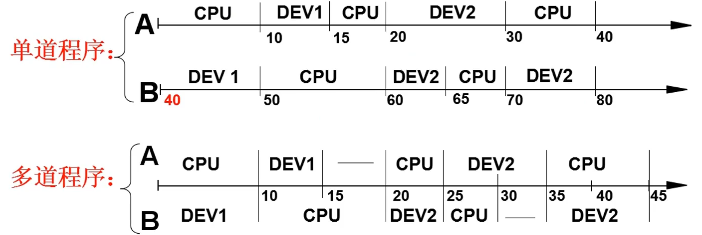</p>
<p>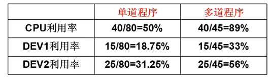</p>
<p>一个CPU上交替执行多个程序，成为<strong>并发</strong>。</p>
<h3 id="只要修改PC就可以了吗？"><a href="#只要修改PC就可以了吗？" class="headerlink" title="只要修改PC就可以了吗？"></a>只要修改PC就可以了吗？</h3><ul>
<li>要记录返回的地址，要记录上一个程序所需要的数据</li>
<li>每个程序有了一个存放信息的结构：PCB</li>
<li>运行的程序和静态程序不一样了…</li>
</ul>
<h3 id="进程"><a href="#进程" class="headerlink" title="进程"></a>进程</h3><ul>
<li>运行的程序和静态程序不一样！<ul>
<li>需要描述这些不一样</li>
<li>程序+这些不一样的地方=》一个概念</li>
</ul>
</li>
<li>进程是进行（执行）中的程序<ul>
<li>进程有开始、有结束，程序没有</li>
<li>进程会走走停停，程序没有</li>
<li>进程需要记录当前状态，程序不用</li>
<li>…</li>
</ul>
</li>
</ul>
<h2 id="多进程图像"><a href="#多进程图像" class="headerlink" title="多进程图像"></a>多进程图像</h2><h3 id="多个进程使用CPU的图像"><a href="#多个进程使用CPU的图像" class="headerlink" title="多个进程使用CPU的图像"></a>多个进程使用CPU的图像</h3><ul>
<li>如何使用CPU<ul>
<li>让程序执行起来</li>
</ul>
</li>
<li>如何充分利用CPU<ul>
<li>启动多个程序，交替执行</li>
</ul>
</li>
<li>启动了的程序就是进程，所以是多个进程推进<ul>
<li>操作系统只需要把这些进程<strong>记录</strong>好、要按照合理的次序推进（分配资源、进行调度）</li>
</ul>
</li>
</ul>
<p>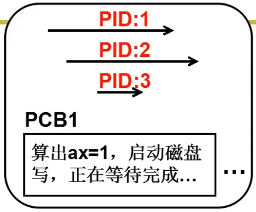</p>
<h3 id="多进程图像从启动开始到关机结束"><a href="#多进程图像从启动开始到关机结束" class="headerlink" title="多进程图像从启动开始到关机结束"></a>多进程图像从启动开始到关机结束</h3><ul>
<li>main中的fork()创建了第一个进程<ul>
<li>init执行了shell</li>
</ul>
</li>
<li>shell再启动其他进程</li>
</ul>
<figure class="highlight c"><table><tr><td class="gutter"><pre><span class="line">1</span><br><span class="line">2</span><br><span class="line">3</span><br><span class="line">4</span><br><span class="line">5</span><br><span class="line">6</span><br><span class="line">7</span><br><span class="line">8</span><br><span class="line">9</span><br><span class="line">10</span><br><span class="line">11</span><br><span class="line">12</span><br></pre></td><td class="code"><pre><span class="line"><span class="function"><span class="keyword">int</span> <span class="title">main</span><span class="params">(<span class="keyword">int</span> argc, <span class="keyword">char</span>* argv[])</span></span></span><br><span class="line"><span class="function"></span>&#123;</span><br><span class="line">    <span class="keyword">while</span>(<span class="number">1</span>)</span><br><span class="line">    &#123;</span><br><span class="line">        <span class="built_in">scanf</span>(<span class="string">&quot;%s&quot;</span>,cmd);</span><br><span class="line">        <span class="keyword">if</span>(!fork())</span><br><span class="line">        &#123;</span><br><span class="line">            exec(cmd);</span><br><span class="line">		&#125;</span><br><span class="line">        wait();</span><br><span class="line">    &#125;</span><br><span class="line">&#125;</span><br></pre></td></tr></table></figure>

<p>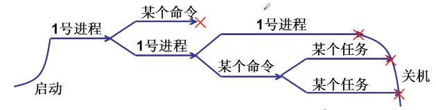</p>
<h3 id="多进程图像：多进程如何组织？"><a href="#多进程图像：多进程如何组织？" class="headerlink" title="多进程图像：多进程如何组织？"></a>多进程图像：多进程如何组织？</h3><ul>
<li>有一个进程在执行（运行）<ul>
<li>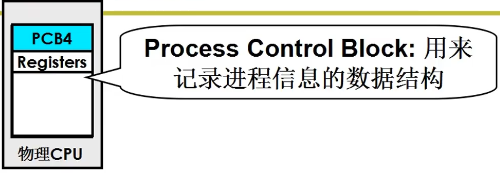</li>
</ul>
</li>
<li>有一些进程等待执行（就绪）<ul>
<li>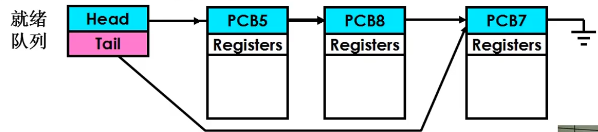</li>
</ul>
</li>
<li>有一些进程在等待某事件（阻塞）<ul>
<li>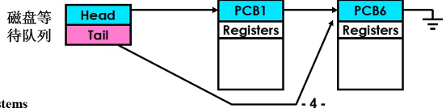</li>
</ul>
</li>
</ul>
<h3 id="多进程的组织：PCB-状态-队列"><a href="#多进程的组织：PCB-状态-队列" class="headerlink" title="多进程的组织：PCB+状态+队列"></a>多进程的组织：PCB+状态+队列</h3><p>进程状态图：</p>
<p>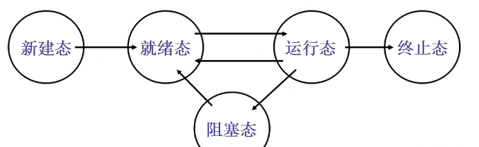</p>
<ul>
<li>它能给出进程生存期的清晰描述</li>
<li>它是认识操作系统进程管理的一个窗口</li>
</ul>
<h3 id="多进程图像：多进程如何交替？"><a href="#多进程图像：多进程如何交替？" class="headerlink" title="多进程图像：多进程如何交替？"></a>多进程图像：多进程如何交替？</h3><ol>
<li>启动磁盘读写；</li>
<li>pCur.state=’W’;//阻塞态</li>
<li>pCur放到DiskWaitQueue；</li>
<li>schedule()</li>
</ol>
<figure class="highlight c"><table><tr><td class="gutter"><pre><span class="line">1</span><br><span class="line">2</span><br><span class="line">3</span><br><span class="line">4</span><br><span class="line">5</span><br><span class="line">6</span><br><span class="line">7</span><br></pre></td><td class="code"><pre><span class="line">schedule()</span><br><span class="line">&#123;</span><br><span class="line">    pNew=getNext(ReadyQueue);</span><br><span class="line">    <span class="comment">//从就绪队列中找到下一个进程的PCB</span></span><br><span class="line">    switch_to(pCur,pNew);</span><br><span class="line">    <span class="comment">//将当前进程的PCB切换为当前PCB</span></span><br><span class="line">&#125;</span><br></pre></td></tr></table></figure>

<h3 id="交替的三个部分：队列操作-调度-切换"><a href="#交替的三个部分：队列操作-调度-切换" class="headerlink" title="交替的三个部分：队列操作+调度+切换"></a>交替的三个部分：队列操作+调度+切换</h3><ul>
<li>进程调度，有很多种算法思想。</li>
<li>FIFO？先来先调度<ul>
<li>FIFO显然是公平的策略</li>
<li>FIFO显然没有考虑进程执行的任务的区别</li>
</ul>
</li>
<li>Priority？<ul>
<li>优先级怎么设定？还可能使得进程饥饿</li>
</ul>
</li>
</ul>
<figure class="highlight c"><table><tr><td class="gutter"><pre><span class="line">1</span><br><span class="line">2</span><br><span class="line">3</span><br><span class="line">4</span><br><span class="line">5</span><br><span class="line">6</span><br><span class="line">7</span><br><span class="line">8</span><br><span class="line">9</span><br><span class="line">10</span><br><span class="line">11</span><br><span class="line">12</span><br><span class="line">13</span><br><span class="line">14</span><br></pre></td><td class="code"><pre><span class="line">switch_to(pCur,pNew)&#123;</span><br><span class="line">    pCur.ax	= CPU.ax;</span><br><span class="line">    pCur.bx = CPU.bx;</span><br><span class="line">    ...</span><br><span class="line">    pCur.cs = CPU .cs;</span><br><span class="line">    pCur.retpc = CPU.pc;</span><br><span class="line">    <span class="comment">//将当前进程保存</span></span><br><span class="line">    CPU.ax = pNew.ax;</span><br><span class="line">    CPU.bx = pNew.bx;</span><br><span class="line">    ...</span><br><span class="line">    CPU.cs = pNew.cs;</span><br><span class="line">    CPU.retpc = pNew.pc;</span><br><span class="line">    <span class="comment">//将下一个进程的状态赋给CPU</span></span><br><span class="line">&#125;</span><br></pre></td></tr></table></figure>

<h3 id="多进程图像：多进程如何影响？"><a href="#多进程图像：多进程如何影响？" class="headerlink" title="多进程图像：多进程如何影响？"></a>多进程图像：多进程如何影响？</h3><ul>
<li>多个 进程同时存在于内存会出现下面的问题<ul>
<li></li>
</ul>
</li>
<li>解决办法：限制对地址100的读写</li>
<li>如何限制：多进程的地址空间分离，操作系统的内存管理</li>
</ul>
<p>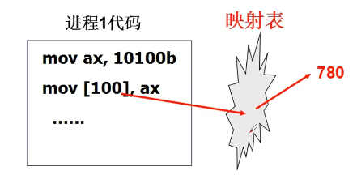</p>
<p>通过映射表将多个进程数据的地址分离开。</p>
<h3 id="多进程图像：多进程如何合作？"><a href="#多进程图像：多进程如何合作？" class="headerlink" title="多进程图像：多进程如何合作？"></a>多进程图像：多进程如何合作？</h3><ul>
<li>想象打印工作过程<ul>
<li>应用程序提交打印任务</li>
<li>打印任务被放进打印队列</li>
<li>打印进程从队列中提取任务</li>
<li>打印进程控制打印机打印</li>
</ul>
</li>
</ul>
<p>多个进程对同一个内存进行覆盖时，交替执行会乱套。</p>
<h3 id="核心在于进程同步（合理的推进顺序）"><a href="#核心在于进程同步（合理的推进顺序）" class="headerlink" title="核心在于进程同步（合理的推进顺序）"></a>核心在于进程同步（合理的推进顺序）</h3><p>使得多个进程有一个合理的进程推进顺序，从而实现进程的合作。</p>
<h2 id="用户级线程"><a href="#用户级线程" class="headerlink" title="用户级线程"></a>用户级线程</h2><p>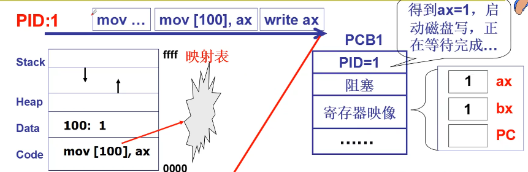</p>
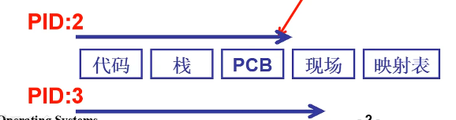

<h3 id="是否可以资源不动而切换指令序列？"><a href="#是否可以资源不动而切换指令序列？" class="headerlink" title="是否可以资源不动而切换指令序列？"></a>是否可以资源不动而切换指令序列？</h3><ul>
<li>进程=资源+指令执行序列<ul>
<li>将资源和指令分开</li>
<li>一个资源+多个指令执行序列</li>
<li>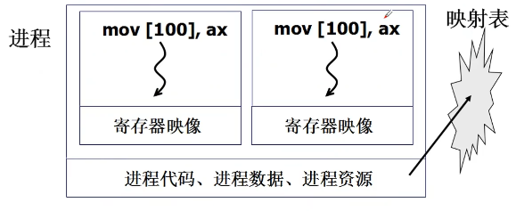</li>
</ul>
</li>
</ul>
<p>我们只切换指令，而资源内存不用切换</p>
<ul>
<li>线程：保留了并发的优点，避免了进程切换代价</li>
<li>实质就是映射表不变而PC指针变</li>
</ul>
<h3 id="多个执行序列-一个地址空间是否实用？"><a href="#多个执行序列-一个地址空间是否实用？" class="headerlink" title="多个执行序列+一个地址空间是否实用？"></a>多个执行序列+一个地址空间是否实用？</h3><ul>
<li>一个网页浏览器<ul>
<li>一个线程用来从服务器接收数据</li>
<li>一个线程用来显示文本</li>
<li>一个线程用来处理图片</li>
<li>一个线程用来显示图片</li>
</ul>
</li>
<li>这些线程需要共享资源吗？<ul>
<li>接收数据都放在缓冲区里</li>
<li>所有的文本、图片都显示在一个屏幕上</li>
</ul>
</li>
</ul>
<h3 id="开始实现这样的浏览器…"><a href="#开始实现这样的浏览器…" class="headerlink" title="开始实现这样的浏览器…"></a>开始实现这样的浏览器…</h3><figure class="highlight c"><table><tr><td class="gutter"><pre><span class="line">1</span><br><span class="line">2</span><br><span class="line">3</span><br><span class="line">4</span><br><span class="line">5</span><br><span class="line">6</span><br><span class="line">7</span><br><span class="line">8</span><br><span class="line">9</span><br><span class="line">10</span><br><span class="line">11</span><br></pre></td><td class="code"><pre><span class="line"><span class="function"><span class="keyword">void</span> <span class="title">WebExplorer</span><span class="params">()</span></span></span><br><span class="line"><span class="function"></span>&#123;</span><br><span class="line">    <span class="keyword">char</span> URL[] = <span class="string">&quot;http://cms.hit.edu.cn&quot;</span>;</span><br><span class="line">    <span class="keyword">char</span> buffer[<span class="number">1000</span>];</span><br><span class="line">    <span class="comment">//创建两个线程</span></span><br><span class="line">    pthread_creat(..., Getdata, URL, buffer);</span><br><span class="line">    pthread_creat(..., Show, buffer);</span><br><span class="line">    </span><br><span class="line">&#125;</span><br><span class="line"><span class="function"><span class="keyword">void</span> <span class="title">GetData</span><span class="params">(<span class="keyword">char</span> *URL, <span class="keyword">char</span> *p)</span></span>&#123;...&#125;</span><br><span class="line"><span class="function"><span class="keyword">void</span> <span class="title">Show</span><span class="params">(<span class="keyword">char</span> *p)</span></span>&#123;...&#125;</span><br></pre></td></tr></table></figure>

<p></p>
<h3 id="核心是Yield"><a href="#核心是Yield" class="headerlink" title="核心是Yield"></a>核心是Yield</h3><ul>
<li>需要知道切换时进程的样子</li>
<li>Create就是制造出第一次切换时的样子</li>
</ul>
<figure class="highlight c"><table><tr><td class="gutter"><pre><span class="line">1</span><br><span class="line">2</span><br><span class="line">3</span><br><span class="line">4</span><br><span class="line">5</span><br><span class="line">6</span><br><span class="line">7</span><br><span class="line">8</span><br><span class="line">9</span><br><span class="line">10</span><br><span class="line">11</span><br><span class="line">12</span><br><span class="line">13</span><br><span class="line">14</span><br><span class="line">15</span><br><span class="line">16</span><br><span class="line">17</span><br><span class="line">18</span><br><span class="line">19</span><br><span class="line">20</span><br></pre></td><td class="code"><pre><span class="line"><span class="number">100</span>:A()</span><br><span class="line">&#123;</span><br><span class="line">    B();</span><br><span class="line">    <span class="number">104</span>:</span><br><span class="line">&#125;</span><br><span class="line"><span class="number">200</span>:B()</span><br><span class="line">&#123;</span><br><span class="line">    Yield();</span><br><span class="line">    <span class="number">204</span>:</span><br><span class="line">&#125;</span><br><span class="line"><span class="number">300</span>:C()</span><br><span class="line">&#123;</span><br><span class="line">    D();</span><br><span class="line">    <span class="number">304</span>:</span><br><span class="line">&#125;</span><br><span class="line"><span class="number">400</span>:D()</span><br><span class="line">&#123;</span><br><span class="line">    Yield();</span><br><span class="line">    <span class="number">404</span>:</span><br><span class="line">&#125;</span><br></pre></td></tr></table></figure>

<p></p>
<h3 id="两个执行序列与一个栈"><a href="#两个执行序列与一个栈" class="headerlink" title="两个执行序列与一个栈"></a>两个执行序列与一个栈</h3><p>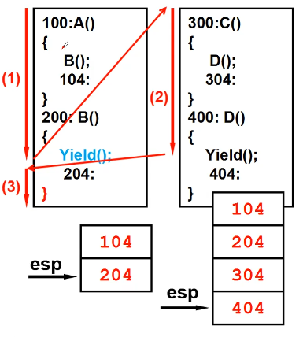</p>
<figure class="highlight c"><table><tr><td class="gutter"><pre><span class="line">1</span><br><span class="line">2</span><br><span class="line">3</span><br><span class="line">4</span><br><span class="line">5</span><br><span class="line">6</span><br><span class="line">7</span><br><span class="line">8</span><br><span class="line">9</span><br><span class="line">10</span><br></pre></td><td class="code"><pre><span class="line"><span class="function"><span class="keyword">void</span> <span class="title">Yield</span><span class="params">()</span></span></span><br><span class="line"><span class="function"></span>&#123;</span><br><span class="line">    找到<span class="number">300</span>;</span><br><span class="line">    jmp <span class="number">300</span>;</span><br><span class="line">&#125;</span><br><span class="line"><span class="function"><span class="keyword">void</span> <span class="title">Yield</span><span class="params">()</span></span></span><br><span class="line"><span class="function"></span>&#123;</span><br><span class="line">    找到<span class="number">204</span>;</span><br><span class="line">    jmp <span class="number">204</span>;</span><br><span class="line">&#125;</span><br></pre></td></tr></table></figure>

<p>最后B()执行完，需要返回到A()，但目前栈中esp-&gt;404，会ret到D()中，从而出现问题。</p>
<h3 id="解决方法：每个线程都要有自己的栈"><a href="#解决方法：每个线程都要有自己的栈" class="headerlink" title="解决方法：每个线程都要有自己的栈"></a>解决方法：每个线程都要有自己的栈</h3><p>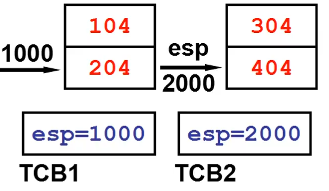</p>
<ul>
<li>Yield切换要先切换栈</li>
</ul>
<figure class="highlight c"><table><tr><td class="gutter"><pre><span class="line">1</span><br><span class="line">2</span><br><span class="line">3</span><br><span class="line">4</span><br><span class="line">5</span><br><span class="line">6</span><br></pre></td><td class="code"><pre><span class="line"><span class="function"><span class="keyword">void</span> <span class="title">Yield</span><span class="params">()</span></span></span><br><span class="line"><span class="function"></span>&#123;</span><br><span class="line">    TCB2.esp=esp;</span><br><span class="line">    esp=TCB1.esp;</span><br><span class="line">    <span class="comment">//jmp 204;*不需要用jmp，直接用栈中的204ret*</span></span><br><span class="line">&#125;</span><br></pre></td></tr></table></figure>

<h3 id="两个线程的样子：两个TCB、两个栈、切换的PC在栈中"><a href="#两个线程的样子：两个TCB、两个栈、切换的PC在栈中" class="headerlink" title="两个线程的样子：两个TCB、两个栈、切换的PC在栈中"></a>两个线程的样子：两个TCB、两个栈、切换的PC在栈中</h3><ul>
<li><p>ThreadCreate的核心就是用程序做出这三样东西</p>
</li>
<li><p>```c<br>void ThreadCreate(A)<br>{</p>
<pre><code>TCB *tcb=malloc();
*stack=malloc();
*stack=A;
tcb.esp=stack;
</code></pre>
<p>}</p>
<figure class="highlight plaintext"><table><tr><td class="gutter"><pre><span class="line">1</span><br><span class="line">2</span><br><span class="line">3</span><br><span class="line">4</span><br><span class="line">5</span><br><span class="line">6</span><br><span class="line">7</span><br><span class="line">8</span><br><span class="line">9</span><br><span class="line">10</span><br><span class="line">11</span><br><span class="line">12</span><br><span class="line">13</span><br><span class="line">14</span><br><span class="line">15</span><br><span class="line">16</span><br><span class="line">17</span><br><span class="line">18</span><br><span class="line">19</span><br><span class="line">20</span><br><span class="line">21</span><br><span class="line">22</span><br><span class="line">23</span><br><span class="line">24</span><br><span class="line">25</span><br><span class="line">26</span><br><span class="line">27</span><br><span class="line">28</span><br><span class="line">29</span><br><span class="line">30</span><br><span class="line">31</span><br><span class="line">32</span><br><span class="line">33</span><br><span class="line">34</span><br><span class="line">35</span><br><span class="line">36</span><br><span class="line">37</span><br><span class="line">38</span><br><span class="line">39</span><br><span class="line">40</span><br><span class="line">41</span><br><span class="line">42</span><br><span class="line">43</span><br><span class="line">44</span><br><span class="line">45</span><br><span class="line">46</span><br><span class="line">47</span><br><span class="line">48</span><br><span class="line">49</span><br><span class="line">50</span><br><span class="line">51</span><br><span class="line">52</span><br><span class="line">53</span><br><span class="line">54</span><br></pre></td><td class="code"><pre><span class="line"></span><br><span class="line">  </span><br><span class="line"></span><br><span class="line">### 用户级线程和内核级线程？ </span><br><span class="line"></span><br><span class="line"></span><br><span class="line"></span><br><span class="line"></span><br><span class="line"></span><br><span class="line">而如果进程1进入了内核，并且阻塞，则会进入进程2，进程1中的其他线程都会不执行。</span><br><span class="line"></span><br><span class="line"></span><br><span class="line"></span><br><span class="line">## 内核级线程</span><br><span class="line"></span><br><span class="line">### 和用户级相比，核心级线程有什么不同？</span><br><span class="line"></span><br><span class="line">-  ThreadCreate是系统调用，内核管理TCB，内核负责切换线程</span><br><span class="line">-  如何让切换成型？--内核栈，TCB</span><br><span class="line">   - 用户栈是否还要用？</span><br><span class="line">     - 执行的代码仍在用户态，还要进行函数调用</span><br><span class="line">   - 一个栈到一套栈；两个栈到两套栈</span><br><span class="line">   - TCB关联内核栈，那用户栈怎么办？</span><br><span class="line">     - 根据TCB切换一套栈</span><br><span class="line"></span><br><span class="line"></span><br><span class="line"></span><br><span class="line">### 用户栈和内核栈之间的关联</span><br><span class="line"></span><br><span class="line"></span><br><span class="line"></span><br><span class="line">一旦INT中断启动，就启用内核栈。</span><br><span class="line"></span><br><span class="line">当中断结束IRET，回到用户栈。</span><br><span class="line"></span><br><span class="line">### 看A()B()C()D()</span><br><span class="line"></span><br><span class="line">```c</span><br><span class="line">100:A()&#123;</span><br><span class="line">    B();</span><br><span class="line">    104:</span><br><span class="line">&#125;</span><br><span class="line">200:B()&#123;</span><br><span class="line">    read();</span><br><span class="line">    204:</span><br><span class="line">&#125;</span><br><span class="line">300:read()&#123;</span><br><span class="line">    int 0x80;</span><br><span class="line">    304:</span><br><span class="line">&#125;</span><br><span class="line">system_call:</span><br><span class="line">	call sys_read;</span><br><span class="line">1000:</span><br><span class="line">2000:sys_read()&#123;&#125;</span><br></pre></td></tr></table></figure></li>
</ul>
<p>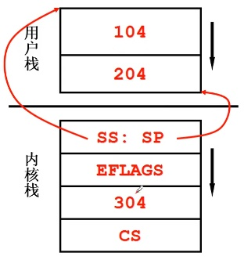</p>
<h3 id="开始内核中的切换：switch-to"><a href="#开始内核中的切换：switch-to" class="headerlink" title="开始内核中的切换：switch_to"></a>开始内核中的切换：switch_to</h3><p>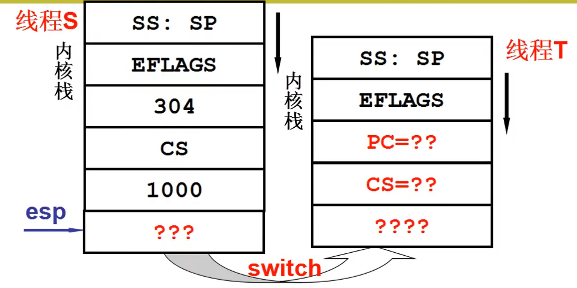</p>
<figure class="highlight c"><table><tr><td class="gutter"><pre><span class="line">1</span><br><span class="line">2</span><br><span class="line">3</span><br><span class="line">4</span><br><span class="line">5</span><br><span class="line">6</span><br></pre></td><td class="code"><pre><span class="line">sys_read()&#123;</span><br><span class="line">	启动磁盘读；</span><br><span class="line">    将自己变成阻塞；</span><br><span class="line">    找到next；</span><br><span class="line">    switch_to(cur,next);    </span><br><span class="line">&#125;</span><br></pre></td></tr></table></figure>

<p><strong>switch_to</strong>:仍然是通过<strong>TCB</strong>找到内核栈指针；然后通过<strong>ret</strong>切到某个内核程序；最后再用<strong>CS:PC</strong>切到用户程序。</p>
<h3 id="上面的？都是什么？"><a href="#上面的？都是什么？" class="headerlink" title="上面的？都是什么？"></a>上面的？都是什么？</h3><figure class="highlight c"><table><tr><td class="gutter"><pre><span class="line">1</span><br><span class="line">2</span><br><span class="line">3</span><br><span class="line">4</span><br><span class="line">5</span><br></pre></td><td class="code"><pre><span class="line"><span class="number">100</span>:A()&#123;<span class="comment">//线程S代码</span></span><br><span class="line">    ...</span><br><span class="line">       <span class="keyword">int</span> <span class="number">0x80</span>;</span><br><span class="line">    ...</span><br><span class="line"><span class="number">2000</span>:sys_read()&#123;...&#125;</span><br></pre></td></tr></table></figure>

<ul>
<li>？？？:sys_read函数的函数的某个地方</li>
<li>？？:中断之前的某个地方</li>
<li>？？？:sys_xxx函数中的某个地方</li>
</ul>
<figure class="highlight c"><table><tr><td class="gutter"><pre><span class="line">1</span><br><span class="line">2</span><br><span class="line">3</span><br><span class="line">4</span><br><span class="line">5</span><br><span class="line">6</span><br></pre></td><td class="code"><pre><span class="line"><span class="number">500</span>:C()&#123;<span class="comment">//线程T代码</span></span><br><span class="line">    ...</span><br><span class="line">interrupt:</span><br><span class="line">    call sys_xxx;</span><br><span class="line"><span class="number">3000</span>:</span><br><span class="line"><span class="number">4000</span>:sys_xxx()&#123;...&#125;</span><br></pre></td></tr></table></figure>

<p>当T创建时：</p>
<ul>
<li>？？:500，函数C()的开始地址</li>
<li>？？？？:一段能完成第二级返回的代码，一段包含iret的代码,从中断中返回</li>
</ul>
<h3 id="内核线程switch-to的五段论"><a href="#内核线程switch-to的五段论" class="headerlink" title="内核线程switch_to的五段论"></a>内核线程switch_to的五段论</h3><p>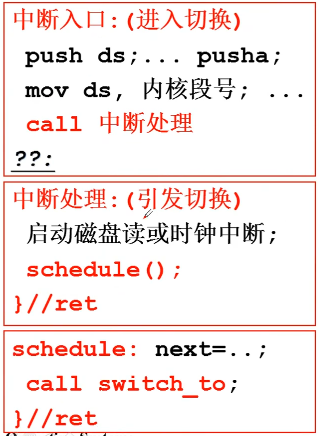</p>
<p>第一级切换：</p>
<p>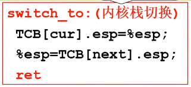</p>
<p>第二级切换：</p>
<p>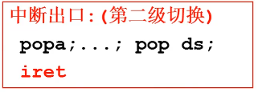</p>
<p>最后，S、T非同一进程，所以还要进行地址切换。首先要切换地址映射表；</p>
<figure class="highlight c"><table><tr><td class="gutter"><pre><span class="line">1</span><br><span class="line">2</span><br><span class="line">3</span><br></pre></td><td class="code"><pre><span class="line">TCB[cur].ldtr = %ldtr</span><br><span class="line">%ldtr = TCB[next].ldtr</span><br><span class="line">    <span class="comment">//内存管理</span></span><br></pre></td></tr></table></figure>

<h3 id="ThreadCreate"><a href="#ThreadCreate" class="headerlink" title="ThreadCreate!"></a>ThreadCreate!</h3><figure class="highlight c"><table><tr><td class="gutter"><pre><span class="line">1</span><br><span class="line">2</span><br><span class="line">3</span><br><span class="line">4</span><br><span class="line">5</span><br><span class="line">6</span><br><span class="line">7</span><br><span class="line">8</span><br><span class="line">9</span><br><span class="line">10</span><br></pre></td><td class="code"><pre><span class="line"><span class="function"><span class="keyword">void</span> <span class="title">ThreadCreate</span><span class="params">(...)</span></span></span><br><span class="line"><span class="function"></span>&#123;</span><br><span class="line">    TCB tcb=get_free_page();</span><br><span class="line">    *krlstack=...;</span><br><span class="line">    *userstack传入;</span><br><span class="line">    填写两个<span class="built_in">stack</span>;</span><br><span class="line">    tcb.esp=krlstack;</span><br><span class="line">    tcb.状态=就绪;</span><br><span class="line">    tcb入队;</span><br><span class="line">&#125;</span><br></pre></td></tr></table></figure>

<h3 id="用户级线程和核心级线程的对比"><a href="#用户级线程和核心级线程的对比" class="headerlink" title="用户级线程和核心级线程的对比"></a>用户级线程和核心级线程的对比</h3><p>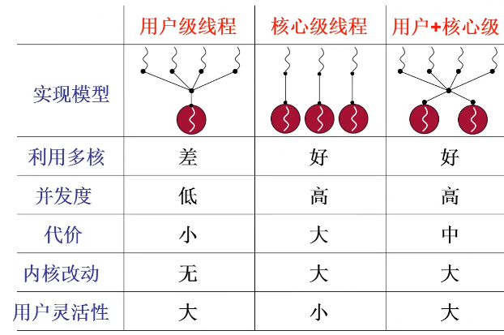</p>
<h2 id="内核级线程实现"><a href="#内核级线程实现" class="headerlink" title="内核级线程实现"></a>内核级线程实现</h2><h3 id="核心级线程的两套栈，核心是内核栈"><a href="#核心级线程的两套栈，核心是内核栈" class="headerlink" title="核心级线程的两套栈，核心是内核栈"></a>核心级线程的两套栈，核心是内核栈</h3><p>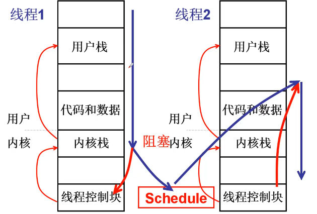</p>
<h3 id="从进入内核开始，某个中断开始"><a href="#从进入内核开始，某个中断开始" class="headerlink" title="从进入内核开始，某个中断开始"></a>从进入内核开始，某个中断开始</h3><figure class="highlight c"><table><tr><td class="gutter"><pre><span class="line">1</span><br><span class="line">2</span><br><span class="line">3</span><br><span class="line">4</span><br><span class="line">5</span><br><span class="line">6</span><br><span class="line">7</span><br><span class="line">8</span><br></pre></td><td class="code"><pre><span class="line">main()&#123;</span><br><span class="line">	A();</span><br><span class="line">    B();</span><br><span class="line">&#125;</span><br><span class="line">A()</span><br><span class="line">&#123;</span><br><span class="line">    fork();<span class="comment">//fork是系统调用，会引起中断</span></span><br><span class="line">&#125;</span><br></pre></td></tr></table></figure>

<p> 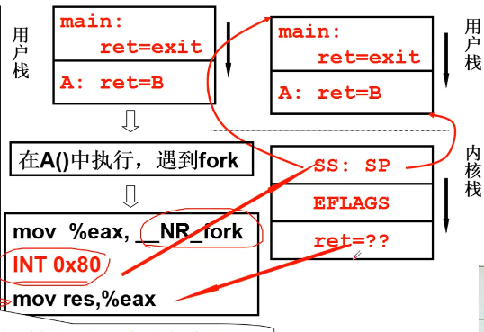</p>
<p>一旦执行int指令，将找到内核栈，然后通过内核栈找到用户栈。</p>
<h3 id="切换五段论的中断入口和中断出口"><a href="#切换五段论的中断入口和中断出口" class="headerlink" title="切换五段论的中断入口和中断出口"></a>切换五段论的中断入口和中断出口</h3><figure class="highlight c"><table><tr><td class="gutter"><pre><span class="line">1</span><br><span class="line">2</span><br><span class="line">3</span><br><span class="line">4</span><br></pre></td><td class="code"><pre><span class="line"><span class="function"><span class="keyword">void</span> <span class="title">sched_init</span><span class="params">(<span class="keyword">void</span>)</span></span></span><br><span class="line"><span class="function"></span>&#123;</span><br><span class="line">    set_system_gate(<span class="number">0x80</span>,&amp;system_call);</span><br><span class="line">&#125;</span><br></pre></td></tr></table></figure>

<p>初始化时将各种中断处理设置好</p>
<figure class="highlight plaintext"><table><tr><td class="gutter"><pre><span class="line">1</span><br><span class="line">2</span><br><span class="line">3</span><br><span class="line">4</span><br><span class="line">5</span><br><span class="line">6</span><br><span class="line">7</span><br><span class="line">8</span><br><span class="line">9</span><br><span class="line">10</span><br><span class="line">11</span><br><span class="line">12</span><br><span class="line">13</span><br><span class="line">14</span><br><span class="line">15</span><br><span class="line">16</span><br><span class="line">17</span><br><span class="line">18</span><br><span class="line">19</span><br><span class="line">20</span><br><span class="line">21</span><br><span class="line">22</span><br></pre></td><td class="code"><pre><span class="line">_system_call:</span><br><span class="line">	push %ds..%fs</span><br><span class="line">	pushl %eax...</span><br><span class="line">	call sys_fork	#执行过程中可能引起切换</span><br><span class="line">	pushl %eax</span><br><span class="line">#将用户态的东西保存起来</span><br><span class="line">	movl _current,%eax	#当前PCB</span><br><span class="line">	cmpl $0,state(%eax)	#当前PCB的状态，0是运行或就绪，非0是阻塞</span><br><span class="line">	jne	reschedule	#阻塞则跳转reschedule，重新调度</span><br><span class="line">	cmpl $0,counter(%eax)	#当前PCB的时间片是否用完</span><br><span class="line">	je rechedule	#时间片用完也要进行调度</span><br><span class="line">ret_from_sys_call:</span><br><span class="line">	popl %eax	#返回值</span><br><span class="line">	popl %ebx	</span><br><span class="line">	...</span><br><span class="line">	pop %fs	</span><br><span class="line">	...</span><br><span class="line">	iret	#切换用户栈</span><br><span class="line">#中断返回函数</span><br><span class="line">reschedule:</span><br><span class="line">	push $ret_form_sys_call</span><br><span class="line">	jmp	_schedule</span><br></pre></td></tr></table></figure>

<figure class="highlight c"><table><tr><td class="gutter"><pre><span class="line">1</span><br><span class="line">2</span><br><span class="line">3</span><br><span class="line">4</span><br><span class="line">5</span><br><span class="line">6</span><br><span class="line">7</span><br><span class="line">8</span><br><span class="line">9</span><br><span class="line">10</span><br><span class="line">11</span><br><span class="line">12</span><br><span class="line">13</span><br><span class="line">14</span><br><span class="line">15</span><br><span class="line">16</span><br></pre></td><td class="code"><pre><span class="line"><span class="function"><span class="keyword">void</span> <span class="title">schedule</span><span class="params">(<span class="keyword">void</span>)</span></span></span><br><span class="line"><span class="function"></span>&#123;</span><br><span class="line">    next=...;<span class="comment">//看调度算法给出下一给线程</span></span><br><span class="line">    switch_to(next);<span class="comment">//next是下一个线程的TCB</span></span><br><span class="line">&#125;</span><br><span class="line"><span class="meta">#<span class="meta-keyword">define</span> switch_to(n)</span></span><br><span class="line">&#123;</span><br><span class="line">    <span class="class"><span class="keyword">struct</span> &#123;</span><span class="keyword">long</span> a,b;&#125;</span><br><span class="line">    _asm_(</span><br><span class="line">    	<span class="string">&quot;movw %%dx,%1\n\t&quot;</span></span><br><span class="line">        <span class="string">&quot;ljmp %0\n\t&quot;</span>	<span class="comment">//长跳转指令，段与段之间的跳转</span></span><br><span class="line">        ::<span class="string">&quot;m&quot;</span>(*&amp;__tmp.a),</span><br><span class="line">        <span class="string">&quot;m&quot;</span>(*&amp;__tmp.b),</span><br><span class="line">        <span class="string">&quot;d&quot;</span>(_TSS(n))	<span class="comment">//n就是next，指向新的段</span></span><br><span class="line">    )</span><br><span class="line">&#125;</span><br></pre></td></tr></table></figure>

<p>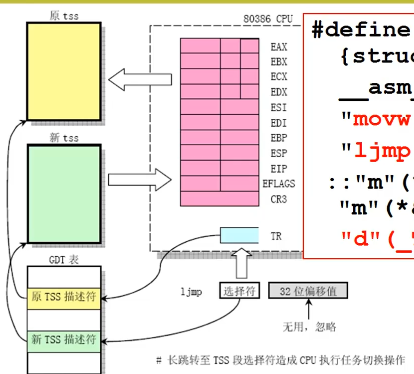</p>
<h3 id="ThreadCreate-1"><a href="#ThreadCreate-1" class="headerlink" title="ThreadCreate"></a>ThreadCreate</h3><ul>
<li>从_sys_fork开始ThreadCreate</li>
</ul>
<figure class="highlight plaintext"><table><tr><td class="gutter"><pre><span class="line">1</span><br><span class="line">2</span><br><span class="line">3</span><br><span class="line">4</span><br><span class="line">5</span><br><span class="line">6</span><br><span class="line">7</span><br><span class="line">8</span><br><span class="line">9</span><br></pre></td><td class="code"><pre><span class="line">_sys_fork:</span><br><span class="line">	push %gs</span><br><span class="line">	pushl %esi</span><br><span class="line">	...</span><br><span class="line">	pushl %eax</span><br><span class="line">	#将当前状态值都入栈</span><br><span class="line">	call _copy_process	#复制父进程的所有参数</span><br><span class="line">	addl $20,%esp</span><br><span class="line">	ret</span><br></pre></td></tr></table></figure>

<h3 id="copy-process的细节：创建栈"><a href="#copy-process的细节：创建栈" class="headerlink" title="copy_process的细节：创建栈"></a>copy_process的细节：创建栈</h3><p>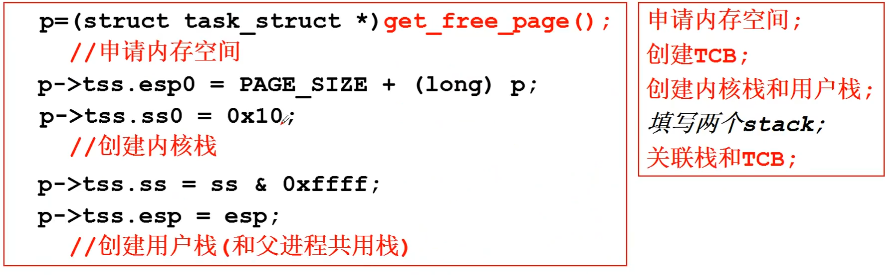</p>
<p>创建TCB，初始化TSS</p>
<p>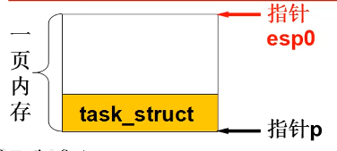</p>
<h3 id="copy-process的细节：执行前准备"><a href="#copy-process的细节：执行前准备" class="headerlink" title="copy_process的细节：执行前准备"></a>copy_process的细节：执行前准备</h3><p>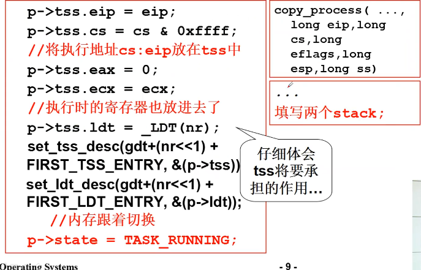</p>
<h3 id="如何执行我们想要的代码"><a href="#如何执行我们想要的代码" class="headerlink" title="如何执行我们想要的代码"></a>如何执行我们想要的代码</h3><figure class="highlight c"><table><tr><td class="gutter"><pre><span class="line">1</span><br><span class="line">2</span><br><span class="line">3</span><br><span class="line">4</span><br><span class="line">5</span><br><span class="line">6</span><br><span class="line">7</span><br><span class="line">8</span><br><span class="line">9</span><br><span class="line">10</span><br><span class="line">11</span><br></pre></td><td class="code"><pre><span class="line"><span class="function"><span class="keyword">int</span> <span class="title">main</span><span class="params">(<span class="keyword">int</span> argc,<span class="keyword">char</span>* argv[])</span></span></span><br><span class="line"><span class="function"></span>&#123;</span><br><span class="line">    <span class="keyword">while</span>(<span class="number">1</span>)&#123;</span><br><span class="line">        <span class="built_in">scanf</span>(<span class="string">&quot;%s&quot;</span>,cmd);</span><br><span class="line">        <span class="keyword">if</span>(!fork())<span class="comment">//子进程的代码</span></span><br><span class="line">        &#123;</span><br><span class="line">            exec(cmd);</span><br><span class="line">        &#125;</span><br><span class="line">        wait(<span class="number">0</span>);</span><br><span class="line">    &#125;</span><br><span class="line">&#125;</span><br></pre></td></tr></table></figure>

<ul>
<li>fork()何时返回0，何时不会？<ul>
<li></li>
<li>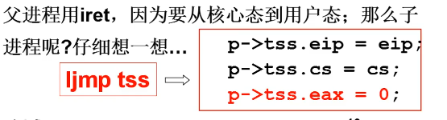</li>
<li>子进程里，eax被置为0，然后通过TSS找到了返回地址</li>
<li>父进程里eax则非0</li>
</ul>
</li>
</ul>
<h3 id="结构：子进程进入A-父进程等待…"><a href="#结构：子进程进入A-父进程等待…" class="headerlink" title="结构：子进程进入A,父进程等待…"></a>结构：子进程进入A,父进程等待…</h3><ul>
<li><p>关于exec这个系统调用</p>
<ul>
<li>```c<br>if(fork()){exec(cmd);}<figure class="highlight plaintext"><table><tr><td class="gutter"><pre><span class="line">1</span><br><span class="line">2</span><br><span class="line">3</span><br><span class="line">4</span><br><span class="line">5</span><br><span class="line">6</span><br><span class="line">7</span><br><span class="line">8</span><br><span class="line">9</span><br><span class="line">10</span><br><span class="line">11</span><br></pre></td><td class="code"><pre><span class="line"></span><br><span class="line">```assembly</span><br><span class="line">_system_call:</span><br><span class="line">	push %ds..%fs</span><br><span class="line">	pushl %edx..</span><br><span class="line">	call sys_execve	</span><br><span class="line">_sys_execve:</span><br><span class="line">	lea EIP(%esp),%eax</span><br><span class="line">	pushl %eax	#将ret的地址（cmd指令的位置）压栈，当exec()在内核态iret时，找到这个地址，执行cmd指令</span><br><span class="line">	call _do_execve</span><br><span class="line">EIP = 0x1c</span><br></pre></td></tr></table></figure></li>
</ul>
</li>
</ul>
<p>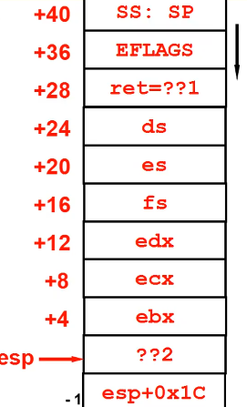</p>
<h3 id="让A执行"><a href="#让A执行" class="headerlink" title="让A执行"></a>让A执行</h3><figure class="highlight c"><table><tr><td class="gutter"><pre><span class="line">1</span><br><span class="line">2</span><br><span class="line">3</span><br><span class="line">4</span><br><span class="line">5</span><br><span class="line">6</span><br><span class="line">7</span><br><span class="line">8</span><br><span class="line">9</span><br><span class="line">10</span><br></pre></td><td class="code"><pre><span class="line"><span class="function"><span class="keyword">int</span> <span class="title">do_exec</span><span class="params">(* eip,...)</span></span></span><br><span class="line"><span class="function"></span>&#123;</span><br><span class="line">    p+=change_ldt(...);</span><br><span class="line">    eip[<span class="number">0</span>]=ex.a_entry;<span class="comment">//ex.a_entry是可执行程序入口地址，产生可执行文件时写入</span></span><br><span class="line">    eip[<span class="number">3</span>]=p;<span class="comment">//修改栈</span></span><br><span class="line">&#125;</span><br><span class="line"><span class="class"><span class="keyword">struct</span> <span class="title">exec</span>&#123;</span></span><br><span class="line">    <span class="keyword">unsigned</span> <span class="keyword">long</span> a_magic;</span><br><span class="line">    <span class="keyword">unsigned</span> a_entry;</span><br><span class="line">&#125;</span><br></pre></td></tr></table></figure>

<h3 id="总结-1"><a href="#总结-1" class="headerlink" title="总结"></a>总结</h3><p>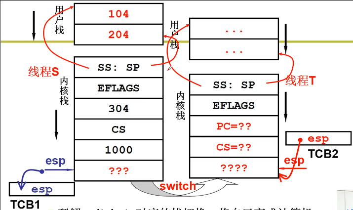</p>
<h2 id="操作系统的那颗“树”"><a href="#操作系统的那颗“树”" class="headerlink" title="操作系统的那颗“树”"></a>操作系统的那颗“树”</h2><figure class="highlight c"><table><tr><td class="gutter"><pre><span class="line">1</span><br><span class="line">2</span><br><span class="line">3</span><br><span class="line">4</span><br><span class="line">5</span><br><span class="line">6</span><br><span class="line">7</span><br><span class="line">8</span><br><span class="line">9</span><br><span class="line">10</span><br><span class="line">11</span><br><span class="line">12</span><br></pre></td><td class="code"><pre><span class="line"><span class="function"><span class="keyword">int</span> <span class="title">main</span><span class="params">(<span class="keyword">int</span> argc, <span class="keyword">char</span>* argv[])</span></span></span><br><span class="line"><span class="function"></span>&#123;</span><br><span class="line">    <span class="keyword">int</span>	i,to,*fp,sum=<span class="number">0</span>;</span><br><span class="line">    to=atoi(argv[<span class="number">1</span>]);</span><br><span class="line">    <span class="keyword">for</span>(i=<span class="number">0</span>;i&lt;=to;i++)</span><br><span class="line">    &#123;</span><br><span class="line">        sum=sum+i;</span><br><span class="line">        <span class="comment">//CPU工作了10毫秒</span></span><br><span class="line">        <span class="built_in">fprintf</span>(fp,<span class="string">&quot;%d&quot;</span>,sum);</span><br><span class="line">        <span class="comment">//CPU停留了10秒钟</span></span><br><span class="line">    &#125;</span><br><span class="line">&#125;</span><br></pre></td></tr></table></figure>

<h3 id="得让CPU好好运转"><a href="#得让CPU好好运转" class="headerlink" title="得让CPU好好运转"></a>得让CPU好好运转</h3><p>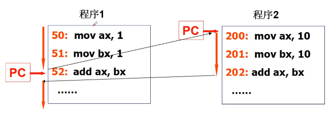</p>
<p>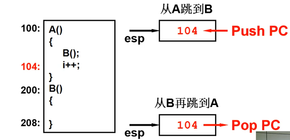</p>
<h3 id="一个栈-Yield造成的混乱"><a href="#一个栈-Yield造成的混乱" class="headerlink" title="一个栈+Yield造成的混乱"></a>一个栈+Yield造成的混乱</h3><p>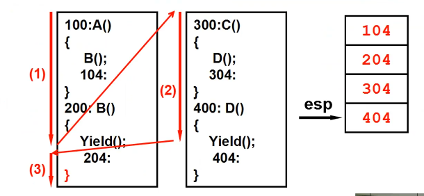</p>
<h3 id="使用两个栈-两个用户TCB"><a href="#使用两个栈-两个用户TCB" class="headerlink" title="使用两个栈+两个用户TCB"></a>使用两个栈+两个用户TCB</h3><p>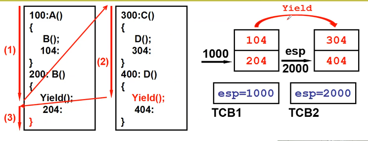</p>
<p>Yield()找到下一个TCB—&gt;找到新的栈—&gt;切到新的栈</p>
<h3 id="不能一直执行用户态"><a href="#不能一直执行用户态" class="headerlink" title="不能一直执行用户态"></a>不能一直执行用户态</h3><p>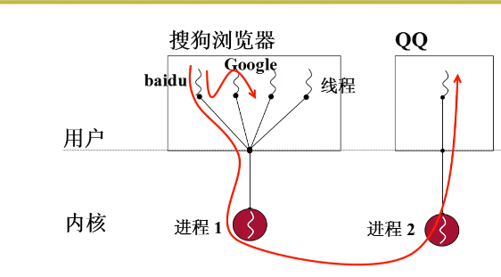</p>
<p>如果进程1进入了内核，并且阻塞，则会进入进程2，进程1中的其他线程都会不执行。</p>
<h3 id="引入内核栈的切换"><a href="#引入内核栈的切换" class="headerlink" title="引入内核栈的切换"></a>引入内核栈的切换</h3><p>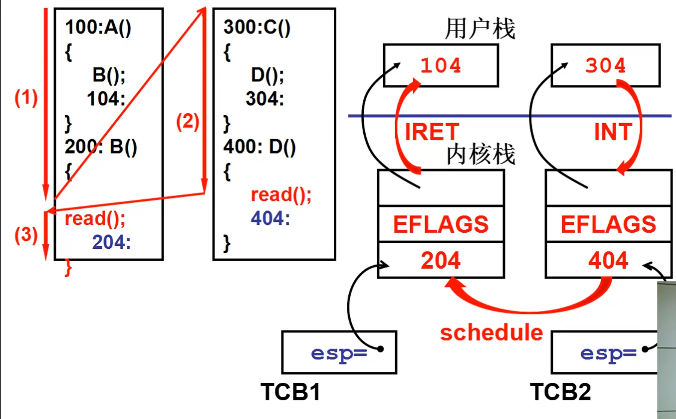</p>
<h3 id="目标：交替的打出A和B"><a href="#目标：交替的打出A和B" class="headerlink" title="目标：交替的打出A和B"></a>目标：交替的打出A和B</h3><figure class="highlight c"><table><tr><td class="gutter"><pre><span class="line">1</span><br><span class="line">2</span><br><span class="line">3</span><br><span class="line">4</span><br><span class="line">5</span><br><span class="line">6</span><br><span class="line">7</span><br></pre></td><td class="code"><pre><span class="line">#AB.<span class="function">c</span></span><br><span class="line"><span class="function"><span class="keyword">int</span> <span class="title">main</span><span class="params">()</span></span></span><br><span class="line"><span class="function"></span>&#123;</span><br><span class="line">    <span class="keyword">if</span>(!fork())&#123;<span class="keyword">while</span>(<span class="number">1</span>)<span class="built_in">printf</span>(<span class="string">&quot;A&quot;</span>);&#125;</span><br><span class="line">    <span class="keyword">if</span>(!fork())&#123;<span class="keyword">while</span>(<span class="number">1</span>)<span class="built_in">printf</span>(<span class="string">&quot;B&quot;</span>);&#125;</span><br><span class="line">    wait();</span><br><span class="line">&#125;</span><br></pre></td></tr></table></figure>

<figure class="highlight plaintext"><table><tr><td class="gutter"><pre><span class="line">1</span><br><span class="line">2</span><br><span class="line">3</span><br><span class="line">4</span><br><span class="line">5</span><br><span class="line">6</span><br><span class="line">7</span><br><span class="line">8</span><br><span class="line">9</span><br><span class="line">10</span><br><span class="line">11</span><br><span class="line">12</span><br><span class="line">13</span><br><span class="line">14</span><br></pre></td><td class="code"><pre><span class="line">main()&#123;</span><br><span class="line">	mov __NR_fork,%eax</span><br><span class="line">	int 0x80</span><br><span class="line">100:</span><br><span class="line">	mov %eax,res</span><br><span class="line">	cmpl res,0</span><br><span class="line">	jne 208</span><br><span class="line">200:</span><br><span class="line">	printf(&quot;A&quot;)</span><br><span class="line">208:</span><br><span class="line">	...</span><br><span class="line">304:</span><br><span class="line">	wait()</span><br><span class="line">&#125;</span><br></pre></td></tr></table></figure>

<h3 id="INT进入内核"><a href="#INT进入内核" class="headerlink" title="INT进入内核"></a>INT进入内核</h3><p>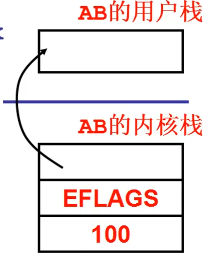</p>
<p>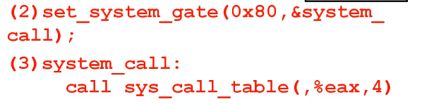</p>
<h3 id="开始sys-fork"><a href="#开始sys-fork" class="headerlink" title="开始sys_fork"></a>开始sys_fork</h3><figure class="highlight plaintext"><table><tr><td class="gutter"><pre><span class="line">1</span><br><span class="line">2</span><br><span class="line">3</span><br><span class="line">4</span><br></pre></td><td class="code"><pre><span class="line">sys_fork:</span><br><span class="line">	push ...</span><br><span class="line">	call copy_process</span><br><span class="line">	ret</span><br></pre></td></tr></table></figure>

<h3 id="开始copy-process"><a href="#开始copy-process" class="headerlink" title="开始copy_process"></a>开始copy_process</h3><figure class="highlight c"><table><tr><td class="gutter"><pre><span class="line">1</span><br><span class="line">2</span><br><span class="line">3</span><br><span class="line">4</span><br><span class="line">5</span><br><span class="line">6</span><br><span class="line">7</span><br><span class="line">8</span><br><span class="line">9</span><br></pre></td><td class="code"><pre><span class="line"><span class="function"><span class="keyword">void</span> <span class="title">copy_process</span><span class="params">(...<span class="keyword">long</span> eip=<span class="number">100</span>,)</span></span></span><br><span class="line"><span class="function"></span>&#123;</span><br><span class="line">    p=(PCB *)get_free_page();</span><br><span class="line">    p-&gt;tss.esp0=p+<span class="number">4</span>k;</span><br><span class="line">    p-&gt;tss.esp=esp;</span><br><span class="line">    p-&gt;tss.eax=<span class="number">0</span>;</span><br><span class="line">    p-&gt;tss.eip=eip;</span><br><span class="line">    ...</span><br><span class="line">&#125;</span><br></pre></td></tr></table></figure>

<p>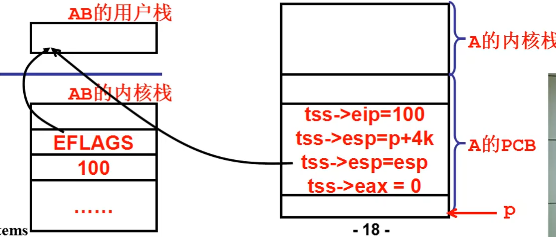</p>
<h3 id="开始返回"><a href="#开始返回" class="headerlink" title="开始返回"></a>开始返回</h3><figure class="highlight plaintext"><table><tr><td class="gutter"><pre><span class="line">1</span><br><span class="line">2</span><br><span class="line">3</span><br><span class="line">4</span><br><span class="line">5</span><br><span class="line">6</span><br><span class="line">7</span><br><span class="line">8</span><br><span class="line">9</span><br><span class="line">10</span><br><span class="line">11</span><br><span class="line">12</span><br><span class="line">13</span><br><span class="line">14</span><br><span class="line">15</span><br><span class="line">16</span><br><span class="line">17</span><br></pre></td><td class="code"><pre><span class="line">copy_process()&#123;...&#125;</span><br><span class="line">sys_fork:</span><br><span class="line">	...</span><br><span class="line">	call copy_process</span><br><span class="line">	...</span><br><span class="line">	ret</span><br><span class="line">system_call:</span><br><span class="line">	...</span><br><span class="line">	call sys_call_table(,%eax,4)</span><br><span class="line">	cmpl $0,state(current)</span><br><span class="line">	jne reschedule</span><br><span class="line">	iret</span><br><span class="line">main:</span><br><span class="line">	int 0x80</span><br><span class="line">100:</span><br><span class="line">	mov %eax,res</span><br><span class="line">	cmpl res,0;</span><br></pre></td></tr></table></figure>

<h3 id="main继续执行"><a href="#main继续执行" class="headerlink" title="main继续执行"></a>main继续执行</h3><p>又一次fork()，再一次int 0x80</p>
<p>在内核中再产生一个PCB和内核栈…</p>
<p></p>
<p>???：是B()函数的执行地址</p>
<h3 id="wait（）"><a href="#wait（）" class="headerlink" title="wait（）"></a>wait（）</h3><p>接下来，wait()函数，将父进程变成阻塞态。</p>
<h3 id="schedule（）"><a href="#schedule（）" class="headerlink" title="schedule（）"></a>schedule（）</h3><p>父进程阻塞，将当前进程变成A或者B</p>
<figure class="highlight c"><table><tr><td class="gutter"><pre><span class="line">1</span><br><span class="line">2</span><br><span class="line">3</span><br><span class="line">4</span><br><span class="line">5</span><br><span class="line">6</span><br><span class="line">7</span><br><span class="line">8</span><br><span class="line">9</span><br></pre></td><td class="code"><pre><span class="line"><span class="function"><span class="keyword">void</span> <span class="title">schedule</span><span class="params">()</span></span></span><br><span class="line"><span class="function"></span>&#123;</span><br><span class="line">    <span class="keyword">if</span>((*P)-&gt;satae==TASK_RUNNING&amp;&amp;(*p)-&gt;counter&gt;c)</span><br><span class="line">    &#123;</span><br><span class="line">        c=(*p)-&gt;counter,next=i;</span><br><span class="line">    	...</span><br><span class="line">    &#125;</span><br><span class="line">     switch_to(next);</span><br><span class="line">&#125;</span><br></pre></td></tr></table></figure>

<h3 id="swtich-to-切换"><a href="#swtich-to-切换" class="headerlink" title="swtich_to()切换"></a>swtich_to()切换</h3><p></p>
<h3 id="怎么调度：时钟中断"><a href="#怎么调度：时钟中断" class="headerlink" title="怎么调度：时钟中断"></a>怎么调度：时钟中断</h3><figure class="highlight c"><table><tr><td class="gutter"><pre><span class="line">1</span><br><span class="line">2</span><br><span class="line">3</span><br><span class="line">4</span><br></pre></td><td class="code"><pre><span class="line"><span class="function"><span class="keyword">void</span> <span class="title">sched_init</span><span class="params">(<span class="keyword">void</span>)</span></span></span><br><span class="line"><span class="function"></span>&#123;</span><br><span class="line">    set_intr_gate(<span class="number">0x20</span>,&amp;timer_interrupt);</span><br><span class="line">&#125;</span><br></pre></td></tr></table></figure>

<figure class="highlight plaintext"><table><tr><td class="gutter"><pre><span class="line">1</span><br><span class="line">2</span><br><span class="line">3</span><br></pre></td><td class="code"><pre><span class="line">void _timer_interrupt:</span><br><span class="line">	...</span><br><span class="line">	call do_timer</span><br></pre></td></tr></table></figure>

<figure class="highlight c"><table><tr><td class="gutter"><pre><span class="line">1</span><br><span class="line">2</span><br><span class="line">3</span><br><span class="line">4</span><br><span class="line">5</span><br><span class="line">6</span><br></pre></td><td class="code"><pre><span class="line"><span class="function"><span class="keyword">void</span> <span class="title">do_timer</span><span class="params">(...)</span></span></span><br><span class="line"><span class="function"></span>&#123;</span><br><span class="line">    <span class="keyword">if</span>((--current)-&gt;counter&gt;<span class="number">0</span>)<span class="keyword">return</span>;</span><br><span class="line">    current-&gt;counter=<span class="number">0</span>;</span><br><span class="line">    schedule();</span><br><span class="line">&#125;</span><br></pre></td></tr></table></figure>

<h2 id="CPU调度策略"><a href="#CPU调度策略" class="headerlink" title="CPU调度策略"></a>CPU调度策略</h2><h3 id="多进程图像与CPU调度"><a href="#多进程图像与CPU调度" class="headerlink" title="多进程图像与CPU调度"></a>多进程图像与CPU调度</h3><p></p>
<h3 id="CPU调度（进程调度）的直观想法"><a href="#CPU调度（进程调度）的直观想法" class="headerlink" title="CPU调度（进程调度）的直观想法"></a>CPU调度（进程调度）的直观想法</h3><ol>
<li>FIFO<ul>
<li>先进先调度</li>
<li>如果一个简单的任务也要等很久，就不太合理</li>
</ul>
</li>
<li>Priority<ul>
<li>任务短可以适当优先</li>
<li>如果都是短任务，那么长任务就得不到处理</li>
</ul>
</li>
</ol>
<h3 id="如何设计调度算法使得进程满意"><a href="#如何设计调度算法使得进程满意" class="headerlink" title="如何设计调度算法使得进程满意"></a>如何设计调度算法使得进程满意</h3><ul>
<li>尽快结束任务：周转时间短</li>
<li>用户操作尽快响应：响应时间短</li>
<li>系统内耗时间少：吞吐量大</li>
</ul>
<h3 id="需要折中处理"><a href="#需要折中处理" class="headerlink" title="需要折中处理"></a>需要折中处理</h3><ul>
<li>吞吐量和响应时间之间有矛盾<ul>
<li>响应时间小=》切换次数多=》系统内耗大=》吞吐量小</li>
</ul>
</li>
<li>前台任务和后台任务的关注点不同<ul>
<li>前台任务关注响应时间、后台任务关注周转时间</li>
</ul>
</li>
<li>IO约束型任务和CPU约束型任务各有各的特点</li>
</ul>
<h3 id="各种基本调度算法"><a href="#各种基本调度算法" class="headerlink" title="各种基本调度算法"></a>各种基本调度算法</h3><h4 id="First-Come，First-Service（FCFS）"><a href="#First-Come，First-Service（FCFS）" class="headerlink" title="First Come，First Service（FCFS）"></a>First Come，First Service（FCFS）</h4><ul>
<li>先来先服务</li>
<li></li>
<li>缺点：平均周转时间大。</li>
</ul>
<p>因为短的作业越前平均周转时间越短，长的作业越后平均周转时间越长。</p>
<h4 id="SJF：短作业优先"><a href="#SJF：短作业优先" class="headerlink" title="SJF：短作业优先"></a>SJF：短作业优先</h4><ul>
<li>平均周转时间最小</li>
<li>响应时间无法控制，长作业要等好久才能执行</li>
<li></li>
</ul>
<h4 id="RR：按时间片来轮转调度"><a href="#RR：按时间片来轮转调度" class="headerlink" title="RR：按时间片来轮转调度"></a>RR：按时间片来轮转调度</h4><p></p>
<ul>
<li>时间片大：响应时间太长；时间片小：吞吐量小</li>
<li>折中：时间片10~100ms，切换时间0.1-1ms</li>
</ul>
<h4 id="一个调度算法怎样让多种类型任务同时满意"><a href="#一个调度算法怎样让多种类型任务同时满意" class="headerlink" title="一个调度算法怎样让多种类型任务同时满意"></a>一个调度算法怎样让多种类型任务同时满意</h4><p>直观想法：定义前台任务和后台任务两队列，前台RR，后台SJF。只有当没有前台任务，才调度后台任务。</p>
<p></p>
<p>如果一直有前台任务，那么怎么办？</p>
<h3 id="饥饿"><a href="#饥饿" class="headerlink" title="饥饿"></a>饥饿</h3><ul>
<li>如果后台任务长时间没有运行，就会饥饿，提高其优先级。</li>
</ul>
<p>让后台任务优先级动态升高，但后台任务（用SJF调度）一旦执行，前台任务就不能很快的响应。</p>
<p>前后台任务都用时间片，后台任务的SJF如何体现？</p>
<h3 id="其他问题"><a href="#其他问题" class="headerlink" title="其他问题"></a>其他问题</h3><p>如何知道哪些是前台任务，哪些是后台任务，fork时能告诉我们吗？</p>
<p>gcc就一点不需要交互吗？word就不会执行一段批处理吗？</p>
<p>SJF中的短作业优先如何体现？如何判断作业的长度？</p>
<h2 id="一个实际的schedule函数"><a href="#一个实际的schedule函数" class="headerlink" title="一个实际的schedule函数"></a>一个实际的schedule函数</h2><p>void schedule（）：</p>
<figure class="highlight c"><table><tr><td class="gutter"><pre><span class="line">1</span><br><span class="line">2</span><br><span class="line">3</span><br><span class="line">4</span><br><span class="line">5</span><br><span class="line">6</span><br><span class="line">7</span><br><span class="line">8</span><br><span class="line">9</span><br><span class="line">10</span><br><span class="line">11</span><br><span class="line">12</span><br><span class="line">13</span><br><span class="line">14</span><br><span class="line">15</span><br><span class="line">16</span><br><span class="line">17</span><br><span class="line">18</span><br><span class="line">19</span><br><span class="line">20</span><br><span class="line">21</span><br><span class="line">22</span><br><span class="line">23</span><br><span class="line">24</span><br><span class="line">25</span><br></pre></td><td class="code"><pre><span class="line"><span class="keyword">while</span> (<span class="number">1</span>) &#123;</span><br><span class="line">	c = <span class="number">-1</span>;</span><br><span class="line">	next = <span class="number">0</span>;</span><br><span class="line">	i = NR_TASKS;</span><br><span class="line">       </span><br><span class="line">	p = &amp;task[NR_TASKS];<span class="comment">//讲从任务列表末尾开始</span></span><br><span class="line">	<span class="keyword">while</span> (--i) &#123;		<span class="comment">//向前移动</span></span><br><span class="line">		<span class="keyword">if</span> (!*--p)</span><br><span class="line">			<span class="keyword">continue</span>;</span><br><span class="line">		<span class="keyword">if</span> ((*p)-&gt;state == TASK_RUNNING &amp;&amp; (*p)-&gt;counter &gt; c)</span><br><span class="line">			c = (*p)-&gt;counter, next = i;</span><br><span class="line">	&#125;<span class="comment">//求大的counter（优先级）（时间片）</span></span><br><span class="line">	<span class="keyword">if</span> (c) <span class="keyword">break</span>;</span><br><span class="line">       <span class="comment">//如果c==0，重置一下counter</span></span><br><span class="line">       <span class="comment">/*</span></span><br><span class="line"><span class="comment">       1.当不存在就绪态进程后，c=-1，执行for循环</span></span><br><span class="line"><span class="comment">       2.for循环使就绪态进程（counter=0）=priority，而使得阻塞态进程counter&gt;priority。这样使得等待时间越长的进程优先级越高</span></span><br><span class="line"><span class="comment">       3.当阻塞态就绪后，会立即获得高优先级</span></span><br><span class="line"><span class="comment">       */</span></span><br><span class="line">	<span class="keyword">for</span>(p = &amp;LAST_TASK ; p &gt; &amp;FIRST_TASK ; --p)</span><br><span class="line">		<span class="keyword">if</span> (*p)</span><br><span class="line">			(*p)-&gt;counter = ((*p)-&gt;counter &gt;&gt; <span class="number">1</span>) +</span><br><span class="line">					(*p)-&gt;priority;</span><br><span class="line">&#125;</span><br><span class="line">switch_to(next); </span><br></pre></td></tr></table></figure>

<h3 id="counter的作用：时间片"><a href="#counter的作用：时间片" class="headerlink" title="counter的作用：时间片"></a>counter的作用：时间片</h3><p>void do_timer(…)</p>
<figure class="highlight c"><table><tr><td class="gutter"><pre><span class="line">1</span><br><span class="line">2</span><br><span class="line">3</span><br></pre></td><td class="code"><pre><span class="line"><span class="keyword">if</span> ((--current-&gt;counter)&gt;<span class="number">0</span>) <span class="keyword">return</span>;</span><br><span class="line">	current-&gt;counter=<span class="number">0</span>;</span><br><span class="line">	schedule();</span><br></pre></td></tr></table></figure>

<p>每次都让counter–，直到等于0时切换任务</p>
<h3 id="counter的作用：优先级"><a href="#counter的作用：优先级" class="headerlink" title="counter的作用：优先级"></a>counter的作用：优先级</h3><p>每次找counter最大的调度，counter表现了优先级。</p>
<p>这个优先级可以不断的动态调整。I/O操作具有前台进程的特征，具有高优先级。</p>
<h3 id="counter作用的整理"><a href="#counter作用的整理" class="headerlink" title="counter作用的整理"></a>counter作用的整理</h3><ul>
<li>counter保证了响应时间的界限</li>
<li>经过I/O以后，counter就会变大；I/O时间越长，counter越大。从而照顾了前台进程。</li>
<li>后台进程一直按照counter轮转，近似SJF调度</li>
<li>每个进程只维护一个counter变量，简单高效</li>
</ul>
<h2 id="进程同步与信号量"><a href="#进程同步与信号量" class="headerlink" title="进程同步与信号量"></a>进程同步与信号量</h2><h3 id="进程合作：多进程共同完成一个任务"><a href="#进程合作：多进程共同完成一个任务" class="headerlink" title="进程合作：多进程共同完成一个任务"></a>进程合作：多进程共同完成一个任务</h3><p></p>
<h3 id="生产者-消费者实例"><a href="#生产者-消费者实例" class="headerlink" title="生产者-消费者实例"></a>生产者-消费者实例</h3><figure class="highlight c"><table><tr><td class="gutter"><pre><span class="line">1</span><br><span class="line">2</span><br><span class="line">3</span><br><span class="line">4</span><br><span class="line">5</span><br></pre></td><td class="code"><pre><span class="line"><span class="comment">//共享数据</span></span><br><span class="line"><span class="meta">#<span class="meta-keyword">define</span> BUFFER_SIZE 10</span></span><br><span class="line"><span class="keyword">typedef</span> <span class="class"><span class="keyword">struct</span>&#123;</span>...&#125;item;</span><br><span class="line">item buffer[BUFFER_SIZE];</span><br><span class="line"><span class="keyword">int</span> in=out=counter=<span class="number">0</span>;</span><br></pre></td></tr></table></figure>

<figure class="highlight c"><table><tr><td class="gutter"><pre><span class="line">1</span><br><span class="line">2</span><br><span class="line">3</span><br><span class="line">4</span><br><span class="line">5</span><br><span class="line">6</span><br><span class="line">7</span><br><span class="line">8</span><br></pre></td><td class="code"><pre><span class="line"><span class="comment">//生产者进程</span></span><br><span class="line"><span class="keyword">while</span>(<span class="literal">true</span>)&#123;</span><br><span class="line">    <span class="keyword">while</span>(counter==BUFFER_SIZE)</span><br><span class="line">        ;<span class="comment">//缓存区满，生产者要停</span></span><br><span class="line">    buffer[in]=item;</span><br><span class="line">    in=(in+<span class="number">1</span>)%BUFFER_SIZE;</span><br><span class="line">    counter++;</span><br><span class="line">&#125;</span><br></pre></td></tr></table></figure>

<figure class="highlight c"><table><tr><td class="gutter"><pre><span class="line">1</span><br><span class="line">2</span><br><span class="line">3</span><br><span class="line">4</span><br><span class="line">5</span><br><span class="line">6</span><br><span class="line">7</span><br><span class="line">8</span><br></pre></td><td class="code"><pre><span class="line"><span class="comment">//消费者进程</span></span><br><span class="line"><span class="keyword">while</span>(<span class="literal">true</span>)&#123;</span><br><span class="line">    <span class="keyword">while</span>(counter==<span class="number">0</span>)</span><br><span class="line">        ;<span class="comment">//缓存区空，消费者要停</span></span><br><span class="line">    item=buffer[out];</span><br><span class="line">    out=(out+<span class="number">1</span>)%BUFFER_SIZE;</span><br><span class="line">    counter--;</span><br><span class="line">&#125;</span><br></pre></td></tr></table></figure>

<p>通过进程同步来保证多进程合作的合理有序。</p>
<h3 id="只发信号还不够"><a href="#只发信号还不够" class="headerlink" title="只发信号还不够"></a>只发信号还不够</h3><p></p>
<ol>
<li>缓冲区满以后生产者P1生产一个item放入，会sleep</li>
<li>又一个生产者P2生产一个item放入，会sleep</li>
<li>消费者C执行1次循环，counter=BUFFER_SIZE-1，发信号给P1，P1wakeup</li>
<li>消费者C再执行1次循环，counter=BUFFER_SIZE-2 ,P2不能被唤醒</li>
</ol>
<ul>
<li>问题的关键在于消费者仅仅是在缓冲区满的时候知道有生产者在等待</li>
<li>也就是sleep了两个进程，而wakeup的时候只能唤醒一个进程，p2永远不会唤醒</li>
</ul>
<h3 id="从信号到信号量"><a href="#从信号到信号量" class="headerlink" title="从信号到信号量"></a>从信号到信号量</h3><p>不只是等待信号和发信号？对应睡眠和唤醒</p>
<p>还应该记录一些其他信息</p>
<ul>
<li>能记录有几个进程在睡眠中需要被唤醒<ol>
<li>缓冲区满，P1执行，P1sleep，记录下1个进程等待</li>
<li>P2执行，P2sleep，记录下2个进程等待</li>
<li>C执行一次循环，发现2个进程等待，wakeup1个</li>
<li>C再执行1次循环，发现1个进程等待，wakeup1个</li>
</ol>
</li>
</ul>
<h3 id="信号量开始工作。。。"><a href="#信号量开始工作。。。" class="headerlink" title="信号量开始工作。。。"></a>信号量开始工作。。。</h3><ol>
<li>缓冲区满，P1执行，P1sleep，sem=-1</li>
<li>P2执行，P2sleep，sem=-2</li>
<li>C执行1次循环，wakeup P1，sem=-1</li>
<li>C再执行一次循环，wakeup P2，sem=0</li>
<li>C再执行一次循环，sem=1</li>
<li>P3执行，sem=0</li>
</ol>
<p></p>
<p></p>
<figure class="highlight c"><table><tr><td class="gutter"><pre><span class="line">1</span><br><span class="line">2</span><br><span class="line">3</span><br><span class="line">4</span><br><span class="line">5</span><br><span class="line">6</span><br></pre></td><td class="code"><pre><span class="line">V(semaphore s)</span><br><span class="line">&#123;</span><br><span class="line">    s.value++;</span><br><span class="line">    <span class="keyword">if</span>(s.value &lt;= <span class="number">0</span>)</span><br><span class="line">        wakeup(s.<span class="built_in">queue</span>);</span><br><span class="line">&#125;</span><br></pre></td></tr></table></figure>

<h3 id="用信号量解生产者-消费者问题"><a href="#用信号量解生产者-消费者问题" class="headerlink" title="用信号量解生产者-消费者问题"></a>用信号量解生产者-消费者问题</h3><figure class="highlight c"><table><tr><td class="gutter"><pre><span class="line">1</span><br><span class="line">2</span><br><span class="line">3</span><br><span class="line">4</span><br><span class="line">5</span><br><span class="line">6</span><br><span class="line">7</span><br><span class="line">8</span><br><span class="line">9</span><br><span class="line">10</span><br><span class="line">11</span><br><span class="line">12</span><br><span class="line">13</span><br><span class="line">14</span><br><span class="line">15</span><br><span class="line">16</span><br><span class="line">17</span><br><span class="line">18</span><br><span class="line">19</span><br><span class="line">20</span><br><span class="line">21</span><br><span class="line">22</span><br><span class="line">23</span><br><span class="line">24</span><br><span class="line">25</span><br><span class="line">26</span><br><span class="line">27</span><br></pre></td><td class="code"><pre><span class="line"><span class="comment">//用文件定义共享缓冲区</span></span><br><span class="line"><span class="keyword">int</span> fd = open(<span class="string">&quot;buffer.txt&quot;</span>);</span><br><span class="line">write(fd, <span class="number">0</span>, <span class="keyword">sizeof</span>(<span class="keyword">int</span>));</span><br><span class="line">write(fd, <span class="number">0</span>, <span class="keyword">sizeof</span>(<span class="keyword">int</span>));</span><br><span class="line"><span class="comment">//信号量的定义和初始化</span></span><br><span class="line">semaphore full=<span class="number">0</span>;</span><br><span class="line">semaphore empty=BUFFER_SIZE;</span><br><span class="line">semaphore mutex=<span class="number">1</span>;</span><br><span class="line"><span class="comment">/*实现互斥，P(mutex)将mutex置为0，其他进程就没法进入缓冲区，V(mutex)再置为1，其他进程就可以进入缓冲区。*/</span></span><br><span class="line"></span><br><span class="line">Producer(item)&#123;</span><br><span class="line">    P(empty);<span class="comment">//缓冲区是否满了,满了停止写入</span></span><br><span class="line">    P(mutex);</span><br><span class="line">    读入in;</span><br><span class="line">    将item写入到in的位置上;</span><br><span class="line">    V(mutex);</span><br><span class="line">    V(full);<span class="comment">//生产者增加内容full++</span></span><br><span class="line">&#125;</span><br><span class="line">Consumer()&#123;</span><br><span class="line">    P(full);<span class="comment">//生产的内容为0，就阻塞，否则full--</span></span><br><span class="line">    P(mutex);</span><br><span class="line">    读入out;</span><br><span class="line">    从文件中的out位置读出到item;</span><br><span class="line">    打印item;</span><br><span class="line">	V(mutex);</span><br><span class="line">    V(empty);<span class="comment">//缓冲区是否为空，空了停止读出</span></span><br><span class="line">&#125;</span><br></pre></td></tr></table></figure>

<h2 id="信号量临界区保护"><a href="#信号量临界区保护" class="headerlink" title="信号量临界区保护"></a>信号量临界区保护</h2><p>上述方案，在进程切换的过程中，可能会发生信号还没修改就进入了另一个进程从而导致语义错误。</p>
<h3 id="竞争条件（RaceCondition）"><a href="#竞争条件（RaceCondition）" class="headerlink" title="竞争条件（RaceCondition）"></a>竞争条件（RaceCondition）</h3><p>竞争条件：和调度有关的共享数据语义错误。</p>
<ul>
<li>错误由多个进程并发操作共享数据引起</li>
<li>错误和调度顺序有关，难于发现和调试</li>
</ul>
<h3 id="解决竞争条件的直观想法"><a href="#解决竞争条件的直观想法" class="headerlink" title="解决竞争条件的直观想法"></a>解决竞争条件的直观想法</h3><ul>
<li><p>在写共享变量empty时阻止其他进程访问empty</p>
<ul>
<li>生产者P1：检查并给empty上锁</li>
<li>生产者P2：检查empty的锁</li>
<li>生产者P1：给empty开锁</li>
<li>生产者P2：检查并给empty上锁</li>
<li>生产者P2：给empty开锁</li>
</ul>
</li>
<li><p>临界区：一次只允许一个进程进入的该进程的那一段代码</p>
<ul>
<li></li>
<li>一个非常重要的工作：找出进程中的临界区代码（读写信号量的代码必须是临界区）</li>
</ul>
</li>
</ul>
<p></p>
<h3 id="临界区代码的保护原则"><a href="#临界区代码的保护原则" class="headerlink" title="临界区代码的保护原则"></a>临界区代码的保护原则</h3><ul>
<li>基本原则：<strong>互斥进入</strong>：如果一个进程在临界区中执行，则其他进程不允许进入<ul>
<li>这些进程间的约束条件称为互斥</li>
<li>这保证了是临界区</li>
</ul>
</li>
<li>好的临界区保护原则：<ul>
<li><strong>有空让进</strong></li>
<li><strong>有限等待</strong></li>
</ul>
</li>
</ul>
<h3 id="进入临界区的第一个尝试-轮换法"><a href="#进入临界区的第一个尝试-轮换法" class="headerlink" title="进入临界区的第一个尝试-轮换法"></a>进入临界区的第一个尝试-轮换法</h3><p></p>
<ul>
<li> 满足互斥进入要求</li>
<li> 轮换的时候，如果有进程在进入前阻塞，那么现在临界区有空，但另一个进程想进也进不去。</li>
</ul>
<h3 id="又一个尝试-标记法"><a href="#又一个尝试-标记法" class="headerlink" title="又一个尝试-标记法"></a>又一个尝试-标记法</h3><p></p>
<ul>
<li> 满足互斥进入要求</li>
<li> 但是，当进程调度过程中会导致两个flag都为1，P0和P1无限等待。</li>
</ul>
<h3 id="非对称标记Peterson算法"><a href="#非对称标记Peterson算法" class="headerlink" title="非对称标记Peterson算法"></a>非对称标记Peterson算法</h3><ul>
<li>带名字的便条+让一个进程更加优先</li>
</ul>
<p></p>
<ul>
<li>满足有空让进：如果进程P1不在临界区，则flag[1]=false或turn=0，P0都能进入。</li>
<li>满足有限等待：P0要求进入，flag[0]=true;后面的P1不可能一直进入，因为P1执行一次就会让turn=0。</li>
</ul>
<h3 id="多进程怎么办？面包店算法"><a href="#多进程怎么办？面包店算法" class="headerlink" title="多进程怎么办？面包店算法"></a>多进程怎么办？面包店算法</h3><ul>
<li>如何轮转：每个进程都获得一个序号，序号最小的进入</li>
<li>如何标记：进程离开时序号为0，不为0的序号即标记</li>
</ul>
<p></p>
<p>面包店算法：每个进入商店的客户都获得一个号码，号码最小的先得到服务；号码相同时，名字靠前的先服务。</p>
<ul>
<li>互斥进入：总是号最小的进入</li>
<li>有空让进：如果没有进程在临界区，最小序号的进程一定能进入</li>
<li>有限等待：离开临界区的进程再次区号一定排在最后。所有有一个FIFO的思想</li>
</ul>
<h3 id="临界区保护的另一类解法"><a href="#临界区保护的另一类解法" class="headerlink" title="临界区保护的另一类解法"></a>临界区保护的另一类解法</h3><ul>
<li><p>再想一下临界区：只允许一个进程进入，进入另一个进程意味着什么？</p>
<ul>
<li><p>被调度：另一个进程只有被调度才能执行，才可能进入临界区，如何阻止调度？</p>
<ul>
<li><p>关闭中断</p>
</li>
<li><p>```C<br>cli();</p>
<pre><code>临界区
</code></pre>
<p>sti();</p>
<pre><code>剩余区    
</code></pre>
<figure class="highlight plaintext"><table><tr><td class="gutter"><pre><span class="line">1</span><br><span class="line">2</span><br><span class="line">3</span><br><span class="line">4</span><br><span class="line">5</span><br><span class="line">6</span><br><span class="line">7</span><br><span class="line">8</span><br><span class="line">9</span><br><span class="line">10</span><br><span class="line">11</span><br><span class="line">12</span><br><span class="line">13</span><br><span class="line">14</span><br><span class="line">15</span><br></pre></td><td class="code"><pre><span class="line"></span><br><span class="line">    - 多核CPU就不能这样操作</span><br><span class="line"></span><br><span class="line">      - 只能关闭一个CPU的终端，另一个CPU还能正常操作</span><br><span class="line"></span><br><span class="line">- 硬件原子指令法</span><br><span class="line"></span><br><span class="line">  - ```c</span><br><span class="line">    boolean TestAndSet(boolean &amp;x)</span><br><span class="line">    //只能有一个进程调用这个函数</span><br><span class="line">    &#123;</span><br><span class="line">        boolean rv=x;</span><br><span class="line">        x=true;//在进入临界区的瞬间，将lock锁上</span><br><span class="line">        return rv</span><br><span class="line">    &#125;</span><br></pre></td></tr></table></figure></li>
</ul>
</li>
<li><p>```c<br>while(TestAndSet(&amp;lock));<br>//临界区<br>lock=false;<br>//剩余区</p>
<figure class="highlight plaintext"><table><tr><td class="gutter"><pre><span class="line">1</span><br><span class="line">2</span><br><span class="line">3</span><br><span class="line">4</span><br><span class="line">5</span><br><span class="line">6</span><br><span class="line">7</span><br><span class="line">8</span><br><span class="line">9</span><br><span class="line">10</span><br><span class="line">11</span><br><span class="line">12</span><br><span class="line">13</span><br><span class="line">14</span><br><span class="line">15</span><br><span class="line">16</span><br><span class="line">17</span><br><span class="line">18</span><br><span class="line">19</span><br><span class="line">20</span><br><span class="line">21</span><br><span class="line">22</span><br><span class="line">23</span><br><span class="line">24</span><br><span class="line">25</span><br><span class="line">26</span><br><span class="line">27</span><br><span class="line">28</span><br><span class="line">29</span><br><span class="line">30</span><br><span class="line">31</span><br><span class="line">32</span><br></pre></td><td class="code"><pre><span class="line"></span><br><span class="line">    </span><br><span class="line"></span><br><span class="line">## 信号量的代码实现</span><br><span class="line"></span><br><span class="line">```c</span><br><span class="line">//producer.c</span><br><span class="line">sd=sem_open(&quot;empty&quot;);</span><br><span class="line">for(i=1 to 5)&#123;</span><br><span class="line">    sem_wait(sd);</span><br><span class="line">    write(fd,&amp;i,4);</span><br><span class="line">&#125;</span><br><span class="line">//sem.c</span><br><span class="line">typedef struct&#123;</span><br><span class="line">    char name[20];</span><br><span class="line">    int value;</span><br><span class="line">    task_struct *queue;</span><br><span class="line">&#125;semtable[20];</span><br><span class="line">sys_sem_open(char *name)&#123;</span><br><span class="line">    在semtable中寻找name对应的；</span><br><span class="line">    没有则创建；</span><br><span class="line">    返回对应的下标</span><br><span class="line">&#125;</span><br><span class="line">sys_sem_wait(int sd)&#123;</span><br><span class="line">    cli();</span><br><span class="line">    if(semtable[sd].value-- &lt; 0)&#123;</span><br><span class="line">        设置自己为阻塞;</span><br><span class="line">        将自己加入semtable[sd].queue中;</span><br><span class="line">        schedule();</span><br><span class="line">    &#125;</span><br><span class="line">    sti();</span><br><span class="line">&#125;</span><br></pre></td></tr></table></figure></li>
</ul>
</li>
</ul>
<h3 id="从Linux0-11中学点东西"><a href="#从Linux0-11中学点东西" class="headerlink" title="从Linux0.11中学点东西"></a>从Linux0.11中学点东西</h3><figure class="highlight c"><table><tr><td class="gutter"><pre><span class="line">1</span><br><span class="line">2</span><br><span class="line">3</span><br><span class="line">4</span><br><span class="line">5</span><br><span class="line">6</span><br><span class="line">7</span><br><span class="line">8</span><br><span class="line">9</span><br><span class="line">10</span><br><span class="line">11</span><br><span class="line">12</span><br><span class="line">13</span><br><span class="line">14</span><br><span class="line">15</span><br><span class="line">16</span><br><span class="line">17</span><br><span class="line">18</span><br><span class="line">19</span><br><span class="line">20</span><br><span class="line">21</span><br><span class="line">22</span><br><span class="line">23</span><br><span class="line">24</span><br><span class="line">25</span><br></pre></td><td class="code"><pre><span class="line"><span class="comment">//读磁盘块</span></span><br><span class="line">bread(<span class="keyword">int</span> dev , <span class="keyword">int</span> block)&#123;</span><br><span class="line">    <span class="class"><span class="keyword">struct</span> <span class="title">buffer_head</span> *<span class="title">bh</span>;</span>	<span class="comment">//申请一个空闲缓冲区</span></span><br><span class="line">    ll_rw_block(READ,bh);	<span class="comment">//读</span></span><br><span class="line">    wait_on_buffer(bh);		<span class="comment">//阻塞</span></span><br><span class="line">&#125;</span><br><span class="line"><span class="comment">//启动磁盘读以后睡眠。等待磁盘读完由磁盘中断将其唤醒。也是一种同步</span></span><br><span class="line">lock_buffer(buffer_head* bh)&#123;</span><br><span class="line">    cli();</span><br><span class="line">    <span class="keyword">while</span>(bh-&gt;b_lock)<span class="comment">//在阻塞队列全部进程唤醒后，按schedule()找一个进程进入磁盘并上锁，其他进程再次阻塞。</span></span><br><span class="line">        sleep_on(&amp;bh-&gt;b_wait）;</span><br><span class="line">    bh-&gt;b_lock = <span class="number">1</span>;<span class="comment">//上锁</span></span><br><span class="line">    sti();</span><br><span class="line">&#125;</span><br><span class="line"><span class="keyword">void</span> sleep_on(struct task_struct **p)&#123;<span class="comment">//传入等待队列队首的指针</span></span><br><span class="line">    struct task_struct *tmp;</span><br><span class="line">    <span class="comment">//世界上最隐蔽的队列</span></span><br><span class="line">    tmp = *p;		<span class="comment">//在下面进程切换的过程中会切换栈，而tmp在栈中，作为局部变量，可以通过tmp找到下一个PCB，构成一个隐蔽的队列</span></span><br><span class="line">    *p = current;</span><br><span class="line">    <span class="comment">//将自己放入阻塞队列</span></span><br><span class="line">    current-&gt;state = TASK_UNINTERRUPTIBLE;</span><br><span class="line">    schedule();</span><br><span class="line">    <span class="keyword">if</span>(tmp)			<span class="comment">//链式唤醒，一次性全部唤醒，然后由schedule来决定唤醒哪一个进程，</span></span><br><span class="line">        tmp-&gt;state=<span class="number">0</span>;</span><br><span class="line">&#125;</span><br></pre></td></tr></table></figure>

<p></p>
<h3 id="如何从Linux0-11的这个队列中唤醒？"><a href="#如何从Linux0-11的这个队列中唤醒？" class="headerlink" title="如何从Linux0.11的这个队列中唤醒？"></a>如何从Linux0.11的这个队列中唤醒？</h3><figure class="highlight c"><table><tr><td class="gutter"><pre><span class="line">1</span><br><span class="line">2</span><br><span class="line">3</span><br><span class="line">4</span><br><span class="line">5</span><br><span class="line">6</span><br><span class="line">7</span><br><span class="line">8</span><br><span class="line">9</span><br><span class="line">10</span><br><span class="line">11</span><br><span class="line">12</span><br><span class="line">13</span><br><span class="line">14</span><br><span class="line">15</span><br><span class="line">16</span><br><span class="line">17</span><br><span class="line">18</span><br></pre></td><td class="code"><pre><span class="line"><span class="function"><span class="keyword">static</span> <span class="keyword">void</span> <span class="title">read_intr</span><span class="params">(<span class="keyword">void</span>)</span></span>&#123;	<span class="comment">//磁盘中断</span></span><br><span class="line">  	...</span><br><span class="line">    end_request(<span class="number">1</span>);</span><br><span class="line">&#125;</span><br><span class="line">end_request(<span class="keyword">int</span> uptodate)&#123;</span><br><span class="line">    ...</span><br><span class="line">    unlock_buffer(current-&gt;bh)</span><br><span class="line">&#125;</span><br><span class="line">unlock_buffer(struct buffer_head * bh)&#123;</span><br><span class="line">    bh-&gt;b_lock=<span class="number">0</span>;</span><br><span class="line">    wake_up(&amp;bh-&gt;b_wait);</span><br><span class="line">&#125;</span><br><span class="line">wake_up(struct task_struct **p)&#123;	<span class="comment">//传入阻塞队列队首</span></span><br><span class="line">    <span class="keyword">if</span>(p &amp;&amp; *p)&#123;</span><br><span class="line">        (**p).state=<span class="number">0</span>;				<span class="comment">//队首指向的进程唤醒</span></span><br><span class="line">        *p=<span class="literal">NULL</span>;</span><br><span class="line">    &#125;</span><br><span class="line">&#125;</span><br></pre></td></tr></table></figure>


<h2 id="死锁处理"><a href="#死锁处理" class="headerlink" title="死锁处理"></a>死锁处理</h2><h3 id="如果信号量这样使用"><a href="#如果信号量这样使用" class="headerlink" title="如果信号量这样使用"></a>如果信号量这样使用</h3><p></p>
<p>将进入区代码，先mutex再empty，先mutex再full</p>
<p>生产者在P（empty）时，需要等待消费者V（empty）,而消费者却在P(mutex)，导致互相等待对方。</p>
<p>死锁：多个进程由于等待对方持有的资源而造成的谁都无法执行的情况。</p>
<p></p>
<h3 id="造成死锁的原因"><a href="#造成死锁的原因" class="headerlink" title="造成死锁的原因"></a>造成死锁的原因</h3><ul>
<li>资源互斥使用，一旦占有别人无法使用（互斥使用）</li>
<li>进程占有了一些资源，又不释放，还要再去申请其他资源（不可抢占）</li>
<li>进程必须占有资源，再去申请（请求和保持）</li>
<li>循环等待（资源分配图中存在一个环路）<ul>
<li>各自占有的资源和互相申请的资源形成了环路等待</li>
</ul>
</li>
</ul>
<h3 id="死锁预防"><a href="#死锁预防" class="headerlink" title="死锁预防"></a>死锁预防</h3><ul>
<li>在进程执行前，一次性申请所有需要的资源，不会占有资源再去申请。<ul>
<li>需要预知未来，编程困难</li>
<li>许多资源分配后很长时间才使用， 资源利用率低</li>
</ul>
</li>
<li>对资源类型进行排序，资源申请必须按序进行，不会出现环路<ul>
<li>仍然造成资源的浪费</li>
</ul>
</li>
</ul>
<h3 id="死锁避免"><a href="#死锁避免" class="headerlink" title="死锁避免"></a>死锁避免</h3><ul>
<li><p>如果系统中的所有进程存在一个可完成的执行序列P1….Pn，则称系统处于安全状态。</p>
</li>
<li><p>安全序列：上面的执行序列</p>
<ul>
<li></li>
<li>P1、P3、P2、P4、P0</li>
</ul>
</li>
<li><p>银行家算法</p>
<ul>
<li><pre><code class="c">int Available[1..m];
int Allocation[1..n,1..m];
int Need[1..n,1..m];
int Work[1..n,1..m];
bool Finish[1..n];

Work = Available;Finish[1..n] = false;
while(true)&#123;
    for(int i=0;i&lt;n;i++)&#123;
        if(Finish[i]==false &amp;&amp; Need[i]&lt;=Work)&#123;
            Work = Work + Allocation[i];
            Finish[i] = true;
            break;
        &#125;
        else &#123; goto end;&#125;
    &#125;
&#125;
end:    for(i=0;i&lt;n;i++)
            if(Finish[i]==false)
                return deadlock;
</code></pre>
<p>T(n)=O(m*n^2)</p>
</li>
</ul>
</li>
</ul>
<h3 id="死锁检测-恢复"><a href="#死锁检测-恢复" class="headerlink" title="死锁检测+恢复"></a>死锁检测+恢复</h3><ul>
<li>恢复很不容易，进程的改变很难恢复</li>
</ul>
<h3 id="死锁忽略"><a href="#死锁忽略" class="headerlink" title="死锁忽略"></a>死锁忽略</h3><ul>
<li>死锁出现不是确定的，又可以用重启动来处理死锁</li>
</ul>
<h2 id="内存使用与分段"><a href="#内存使用与分段" class="headerlink" title="内存使用与分段"></a>内存使用与分段</h2><h3 id="从计算机如何工作开始讲起"><a href="#从计算机如何工作开始讲起" class="headerlink" title="从计算机如何工作开始讲起"></a>从计算机如何工作开始讲起</h3><p></p>
<ul>
<li>内存使用：将程序放入内存中，PC指向开始地址</li>
</ul>
<h3 id="首先让程序进入内存"><a href="#首先让程序进入内存" class="headerlink" title="首先让程序进入内存"></a>首先让程序进入内存</h3><p></p>
<p>​    用磁盘将对应的机械代码读入内存，call 40时需要在地址总线上发送40，然后main函数的入口就放在40地址处。而物理内存40正好是_entry到_main的偏移地址，所以_entry就在地址0处。</p>
<p></p>
<p>但如果有0地址处被占用了，或多个程序在内存中，就不能都放在0地址处。</p>
<p></p>
<p>但一旦IP修改到一个空闲的地址，那么call 40就不再是_main的地址。</p>
<h3 id="重定位：修改程序中的地址-相对地址-逻辑地址"><a href="#重定位：修改程序中的地址-相对地址-逻辑地址" class="headerlink" title="重定位：修改程序中的地址(相对地址/逻辑地址)"></a>重定位：修改程序中的地址(相对地址/逻辑地址)</h3><p></p>
<p>什么时候完成重定位？</p>
<ol>
<li>编译时（编译时不知道执行时哪些地址是空闲的，在实际系统中何难实现。但例如嵌入式系统烧录后不再改变，就可以实现）</li>
<li>载入时（在载入内存时重定位，执行前分配空闲的地址）</li>
<li>运行时（支持进程换入和换出）</li>
</ol>
<h3 id="程序载入后还需要移动"><a href="#程序载入后还需要移动" class="headerlink" title="程序载入后还需要移动"></a>程序载入后还需要移动</h3><ul>
<li>一个重要概念：交换（swap）<ul>
<li></li>
<li>如果一个进程阻塞了，那么需要将睡眠的进程换出，将就绪的进程换入。</li>
<li>一旦进程在载入后移动，地址就又发生了该百年。</li>
</ul>
</li>
</ul>
<h3 id="重定位最合适的时机-运行时重定位"><a href="#重定位最合适的时机-运行时重定位" class="headerlink" title="重定位最合适的时机-运行时重定位"></a>重定位最合适的时机-运行时重定位</h3><ul>
<li>在运行每条指令时才完成重定位<ul>
<li></li>
<li>base放在哪里？怎么找到？<ul>
<li>在PCB中，一旦进程执行，执行指令翻译时，就从PCB中找基地址</li>
</ul>
</li>
</ul>
</li>
</ul>
<h3 id="引入分段：是将整个程序一起载入内存中吗？"><a href="#引入分段：是将整个程序一起载入内存中吗？" class="headerlink" title="引入分段：是将整个程序一起载入内存中吗？"></a>引入分段：是将整个程序一起载入内存中吗？</h3><ul>
<li>程序员眼中的程序<ul>
<li>由若干部分（段）组成，每个段有各自的特点、用途：代码段只读，代码段/数据段不会动态增长</li>
<li></li>
</ul>
</li>
<li>符合用户观点：用户可独立考虑每个分段（分治）</li>
<li>怎么具体定位具体指令（数据）：&lt;段号，段内偏移&gt;（&lt;cs:ip&gt;）</li>
</ul>
<h3 id="不是将整个程序，是将各个段分别放入内存"><a href="#不是将整个程序，是将各个段分别放入内存" class="headerlink" title="不是将整个程序，是将各个段分别放入内存"></a>不是将整个程序，是将各个段分别放入内存</h3><p>由高地址到低地址分别是：</p>
<ol>
<li><p>栈：是一种用来存储函数调用时的临时信息的结构，如函数调用所传递的参数、函数的返回地址、函数的局部变量等。 在程序运行时由编译器在需要的时候分配，在不需要的时候自动清除。</p>
</li>
<li><p>堆：用来存储程序运行时分配的变量。</p>
<p>堆的大小并不固定，可动态扩张或缩减。其分配由malloc()、new()等这类实时内存分配函数来实现。当进程调用malloc等函数分配内存时，新分配的内存就被动态添加到堆上（堆被扩张）；当利用free()等函数释放内存时，被释放的内存从堆中被剔除（堆被缩减）  堆的内存释放由应用程序去控制，通常一个new()就要对应一个delete()，如果程序员没有释放掉，那么在程序结束后操作系统会自动回收。</p>
</li>
<li><p>BSS段：用来保存全局的和静态的未初始化变量</p>
</li>
<li><p>data段：用来存放保存全局的和静态的已初始化变量</p>
</li>
<li><p>text段：存放着程序的机器码和只读数据，可执行指令就是从这里取得的。</p>
</li>
</ol>
<p>需要一张表，来记录每个段的<strong>基址、长度、读写权限</strong>等，即<strong>进程段表</strong>（LDT）</p>
<p>而操作系统的那张段表就是（GDT）</p>
<h3 id="真正的故事：GDT-LDT"><a href="#真正的故事：GDT-LDT" class="headerlink" title="真正的故事：GDT+LDT"></a>真正的故事：GDT+LDT</h3><p>GDT表项：</p>
<p></p>
<p>通过GDT表分开各个进程的基址，通过LDT表来分开进程中各个段的基址</p>
<p></p>
<h2 id="内存分区与分页"><a href="#内存分区与分页" class="headerlink" title="内存分区与分页"></a>内存分区与分页</h2> 
      <!-- reward -->
      
    </div>
    

    <!-- copyright -->
    
    <div class="declare">
      <ul class="post-copyright">
        <li>
          <i class="ri-copyright-line"></i>
          <strong>Copyright： </strong>
          
          Copyright is owned by the author. For commercial reprints, please contact the author for authorization. For non-commercial reprints, please indicate the source.
          
        </li>
      </ul>
    </div>
    
    <footer class="article-footer">
       
<div class="share-btn">
      <span class="share-sns share-outer">
        <i class="ri-share-forward-line"></i>
        分享
      </span>
      <div class="share-wrap">
        <i class="arrow"></i>
        <div class="share-icons">
          
          <a class="weibo share-sns" href="javascript:;" data-type="weibo">
            <i class="ri-weibo-fill"></i>
          </a>
          <a class="weixin share-sns wxFab" href="javascript:;" data-type="weixin">
            <i class="ri-wechat-fill"></i>
          </a>
          <a class="qq share-sns" href="javascript:;" data-type="qq">
            <i class="ri-qq-fill"></i>
          </a>
          <a class="douban share-sns" href="javascript:;" data-type="douban">
            <i class="ri-douban-line"></i>
          </a>
          <!-- <a class="qzone share-sns" href="javascript:;" data-type="qzone">
            <i class="icon icon-qzone"></i>
          </a> -->
          
          <a class="facebook share-sns" href="javascript:;" data-type="facebook">
            <i class="ri-facebook-circle-fill"></i>
          </a>
          <a class="twitter share-sns" href="javascript:;" data-type="twitter">
            <i class="ri-twitter-fill"></i>
          </a>
          <a class="google share-sns" href="javascript:;" data-type="google">
            <i class="ri-google-fill"></i>
          </a>
        </div>
      </div>
</div>

<div class="wx-share-modal">
    <a class="modal-close" href="javascript:;"><i class="ri-close-circle-line"></i></a>
    <p>扫一扫，分享到微信</p>
    <div class="wx-qrcode">
      
    </div>
</div>

<div id="share-mask"></div>  
    </footer>
  </div>

   
  <nav class="article-nav">
    
    
      <a href="/2021/04/12/%E8%AE%A1%E7%AE%97%E6%9C%BA%E7%B3%BB%E7%BB%9F/" class="article-nav-link">
        <strong class="article-nav-caption">下一篇</strong>
        <div class="article-nav-title">深入了解计算机系统</div>
      </a>
    
  </nav>

   
 
   
     
</article>

</section>
      <footer class="footer">
  <div class="outer">
    <ul>
      <li>
        Copyrights &copy;
        2020-2021
        <i class="ri-heart-fill heart_icon"></i> YYz
      </li>
    </ul>
    <ul>
      <li>
        
      </li>
    </ul>
    <ul>
      <li>
        
        
        <span>
  <span><i class="ri-user-3-fill"></i>Visitors:<span id="busuanzi_value_site_uv"></span></span>
  <span class="division">|</span>
  <span><i class="ri-eye-fill"></i>Views:<span id="busuanzi_value_page_pv"></span></span>
</span>
        
      </li>
    </ul>
    <ul>
      
    </ul>
    <ul>
      
    </ul>
    <ul>
      <li>
        <!-- cnzz统计 -->
        
      </li>
    </ul>
  </div>
</footer>    
    </main>
    <div class="float_btns">
      <div class="totop" id="totop">
  <i class="ri-arrow-up-line"></i>
</div>

<div class="todark" id="todark">
  <i class="ri-moon-line"></i>
</div>

    </div>
    <aside class="sidebar on">
      <button class="navbar-toggle"></button>
<nav class="navbar">
  
  <div class="logo">
    <a href="/"></a>
  </div>
  
  <ul class="nav nav-main">
    
    <li class="nav-item">
      <a class="nav-item-link" href="/">主页</a>
    </li>
    
    <li class="nav-item">
      <a class="nav-item-link" href="/archives">归档</a>
    </li>
    
    <li class="nav-item">
      <a class="nav-item-link" href="/categories">分类</a>
    </li>
    
  </ul>
</nav>
<nav class="navbar navbar-bottom">
  <ul class="nav">
    <li class="nav-item">
      
      <a class="nav-item-link nav-item-search"  title="Search">
        <i class="ri-search-line"></i>
      </a>
      
      
    </li>
  </ul>
</nav>
<div class="search-form-wrap">
  <div class="local-search local-search-plugin">
  <input type="search" id="local-search-input" class="local-search-input" placeholder="Search...">
  <div id="local-search-result" class="local-search-result"></div>
</div>
</div>
    </aside>
    <div id="mask"></div>

<!-- #reward -->
<div id="reward">
  <span class="close"><i class="ri-close-line"></i></span>
  <p class="reward-p"><i class="ri-cup-line"></i>请我喝杯咖啡吧~</p>
  <div class="reward-box">
    
    <div class="reward-item">
      
      <span class="reward-type">支付宝</span>
    </div>
    
    
    <div class="reward-item">
      
      <span class="reward-type">微信</span>
    </div>
    
  </div>
</div>
    
<script src="/js/jquery-3.6.0.min.js"></script>
 
<script src="/js/lazyload.min.js"></script>

<!-- Tocbot -->
 
<script src="/js/tocbot.min.js"></script>

<script>
  tocbot.init({
    tocSelector: ".tocbot",
    contentSelector: ".article-entry",
    headingSelector: "h1, h2, h3, h4, h5, h6",
    hasInnerContainers: true,
    scrollSmooth: true,
    scrollContainer: "main",
    positionFixedSelector: ".tocbot",
    positionFixedClass: "is-position-fixed",
    fixedSidebarOffset: "auto",
  });
</script>

<script src="https://cdn.jsdelivr.net/npm/jquery-modal@0.9.2/jquery.modal.min.js"></script>
<link
  rel="stylesheet"
  href="https://cdn.jsdelivr.net/npm/jquery-modal@0.9.2/jquery.modal.min.css"
/>
<script src="https://cdn.jsdelivr.net/npm/justifiedGallery@3.7.0/dist/js/jquery.justifiedGallery.min.js"></script>

<script src="/dist/main.js"></script>

<!-- ImageViewer -->
 <!-- Root element of PhotoSwipe. Must have class pswp. -->
<div class="pswp" tabindex="-1" role="dialog" aria-hidden="true">

    <!-- Background of PhotoSwipe. 
         It's a separate element as animating opacity is faster than rgba(). -->
    <div class="pswp__bg"></div>

    <!-- Slides wrapper with overflow:hidden. -->
    <div class="pswp__scroll-wrap">

        <!-- Container that holds slides. 
            PhotoSwipe keeps only 3 of them in the DOM to save memory.
            Don't modify these 3 pswp__item elements, data is added later on. -->
        <div class="pswp__container">
            <div class="pswp__item"></div>
            <div class="pswp__item"></div>
            <div class="pswp__item"></div>
        </div>

        <!-- Default (PhotoSwipeUI_Default) interface on top of sliding area. Can be changed. -->
        <div class="pswp__ui pswp__ui--hidden">

            <div class="pswp__top-bar">

                <!--  Controls are self-explanatory. Order can be changed. -->

                <div class="pswp__counter"></div>

                <button class="pswp__button pswp__button--close" title="Close (Esc)"></button>

                <button class="pswp__button pswp__button--share" style="display:none" title="Share"></button>

                <button class="pswp__button pswp__button--fs" title="Toggle fullscreen"></button>

                <button class="pswp__button pswp__button--zoom" title="Zoom in/out"></button>

                <!-- Preloader demo http://codepen.io/dimsemenov/pen/yyBWoR -->
                <!-- element will get class pswp__preloader--active when preloader is running -->
                <div class="pswp__preloader">
                    <div class="pswp__preloader__icn">
                        <div class="pswp__preloader__cut">
                            <div class="pswp__preloader__donut"></div>
                        </div>
                    </div>
                </div>
            </div>

            <div class="pswp__share-modal pswp__share-modal--hidden pswp__single-tap">
                <div class="pswp__share-tooltip"></div>
            </div>

            <button class="pswp__button pswp__button--arrow--left" title="Previous (arrow left)">
            </button>

            <button class="pswp__button pswp__button--arrow--right" title="Next (arrow right)">
            </button>

            <div class="pswp__caption">
                <div class="pswp__caption__center"></div>
            </div>

        </div>

    </div>

</div>

<link rel="stylesheet" href="https://cdn.jsdelivr.net/npm/photoswipe@4.1.3/dist/photoswipe.min.css">
<link rel="stylesheet" href="https://cdn.jsdelivr.net/npm/photoswipe@4.1.3/dist/default-skin/default-skin.min.css">
<script src="https://cdn.jsdelivr.net/npm/photoswipe@4.1.3/dist/photoswipe.min.js"></script>
<script src="https://cdn.jsdelivr.net/npm/photoswipe@4.1.3/dist/photoswipe-ui-default.min.js"></script>

<script>
    function viewer_init() {
        let pswpElement = document.querySelectorAll('.pswp')[0];
        let $imgArr = document.querySelectorAll(('.article-entry img:not(.reward-img)'))

        $imgArr.forEach(($em, i) => {
            $em.onclick = () => {
                // slider展开状态
                // todo: 这样不好，后面改成状态
                if (document.querySelector('.left-col.show')) return
                let items = []
                $imgArr.forEach(($em2, i2) => {
                    let img = $em2.getAttribute('data-idx', i2)
                    let src = $em2.getAttribute('data-target') || $em2.getAttribute('src')
                    let title = $em2.getAttribute('alt')
                    // 获得原图尺寸
                    const image = new Image()
                    image.src = src
                    items.push({
                        src: src,
                        w: image.width || $em2.width,
                        h: image.height || $em2.height,
                        title: title
                    })
                })
                var gallery = new PhotoSwipe(pswpElement, PhotoSwipeUI_Default, items, {
                    index: parseInt(i)
                });
                gallery.init()
            }
        })
    }
    viewer_init()
</script> 
<!-- MathJax -->

<!-- Katex -->

<!-- busuanzi  -->
 
<script src="/js/busuanzi-2.3.pure.min.js"></script>
 
<!-- ClickLove -->

<!-- ClickBoom1 -->

<!-- ClickBoom2 -->
 
<script src="/js/clickBoom2.js"></script>
 
<!-- CodeCopy -->
 
<link rel="stylesheet" href="/css/clipboard.css">
 <script src="https://cdn.jsdelivr.net/npm/clipboard@2/dist/clipboard.min.js"></script>
<script>
  function wait(callback, seconds) {
    var timelag = null;
    timelag = window.setTimeout(callback, seconds);
  }
  !function (e, t, a) {
    var initCopyCode = function(){
      var copyHtml = '';
      copyHtml += '<button class="btn-copy" data-clipboard-snippet="">';
      copyHtml += '<i class="ri-file-copy-2-line"></i><span>COPY</span>';
      copyHtml += '</button>';
      $(".highlight .code pre").before(copyHtml);
      $(".article pre code").before(copyHtml);
      var clipboard = new ClipboardJS('.btn-copy', {
        target: function(trigger) {
          return trigger.nextElementSibling;
        }
      });
      clipboard.on('success', function(e) {
        let $btn = $(e.trigger);
        $btn.addClass('copied');
        let $icon = $($btn.find('i'));
        $icon.removeClass('ri-file-copy-2-line');
        $icon.addClass('ri-checkbox-circle-line');
        let $span = $($btn.find('span'));
        $span[0].innerText = 'COPIED';
        
        wait(function () { // 等待两秒钟后恢复
          $icon.removeClass('ri-checkbox-circle-line');
          $icon.addClass('ri-file-copy-2-line');
          $span[0].innerText = 'COPY';
        }, 2000);
      });
      clipboard.on('error', function(e) {
        e.clearSelection();
        let $btn = $(e.trigger);
        $btn.addClass('copy-failed');
        let $icon = $($btn.find('i'));
        $icon.removeClass('ri-file-copy-2-line');
        $icon.addClass('ri-time-line');
        let $span = $($btn.find('span'));
        $span[0].innerText = 'COPY FAILED';
        
        wait(function () { // 等待两秒钟后恢复
          $icon.removeClass('ri-time-line');
          $icon.addClass('ri-file-copy-2-line');
          $span[0].innerText = 'COPY';
        }, 2000);
      });
    }
    initCopyCode();
  }(window, document);
</script>
 
<!-- CanvasBackground -->
 
<script src="/js/dz.js"></script>
 
<script>
  if (window.mermaid) {
    mermaid.initialize({ theme: "forest" });
  }
</script>


    
    

  </div>
</body>

</html>